Reasoning and Communicating
with Rationale™
Timo ter Berg, Tim van Gelder,
Fiona Patterson, Sytske Teppema
Copyright © 2013 Critical Thinking Skills BV
ISBN: 978-14-9210-324-0
Uniform Dutch-Language Classification (NUR): 143
Key words: critical thinking, reasoning, communicating, writing,
argument mapping
Second, enlarged edition.
First edition was published by Pearson Education Benelux in 2009.
Cover: Studio Jan de Boer, Amsterdam
Editing: MW Projects
This is a publication by Critical Thinking Skills BV
P.O. Box 51266
1007 EG Amsterdam
Website: www.ReasoningLab.com
Email: info@ReasoningLab.com
This book is part of the method Critical Thinking with Rationale.
For more information about the method and about Rationale, see:
For direct access to Rationale: www.RationaleOnline.com.
Educational institutes can acquire the method at ReasoningLab.com in license.
Students / Faculty can buy a license for Rationale with a special
discount at Reasoninglab.com.
All rights reserved. Nothing in this publication may be duplicated, recorded in an automated database or made public, in any form or in any way, whether electronic, mechanic, photocopies, recordings or any other manner, without prior permission from the publisher.
Inasmuch as making copies of this publication is permitted on the basis of article 16B of the Copyright Act of 1912 in accordance with the Decree of 20 June 1974, Bulletin of Acts, Orders and Decrees 351, as amended by the Decree of 23 August 1985, Bulletin of Acts, Orders and Decrees 471 and Article 17 of the Copyright Act of 1912, the legally owed payment must be made to the Reproduction Rights Association. For the use of part(s) of this publication in anthologies, learning path packs and other compilations or other works (Article 16 of the Copyright Act of 1912), in whatever form, the publisher must be contacted.
Despite all care taken in the creation of this book, neither the editors, the authors, the translators nor the publisher can accept responsibility for any damages arising from any mistakes in this publication.
Critical thinking, reasoning and the ability to produce a well-structured essay are essential skills for students in (higher) education. The question arises as to how students will master critical thinking skills.
Conducting research is becoming more and more important in higher education: the ability to conduct research is also one of the necessary skills for the execution of one’s professional practice. So how will students acquire the critical, inquiring attitude required for their studies and their professional lives?
The method Critical Thinking with Rationale is an answer to these questions.
In higher education little attention has been paid to the development of critical thinking skills, that is to say, in a systematic manner. And even if it is a point of interest, it may be questioned whether this is done properly. Generally, students are supposed to have acquired the ability of critical thinking or to pick it up automatically during their college education.
At the University of Melbourne the research group of Tim van Gelder has devoted, for many years, their research to the improvement of critical thinking skills. On the basis of this research, they have developed a method - supported by a program called Rationale - to advance these skills.
Since 2006, we have been working closely together with Tim van Gelder and his colleague Fiona Patterson in order to make this method available for the Dutch speaking regions. One of the reasons which has led to this, is the fact that comparative research has proved the effectiveness of this particular method.
Tim van Gelder and Fiona Patterson have formulated within the framework of this method the so-called Topics in Reasoning. The main part of this book consists of these Topics. They are important, not only to learn to reason - a core part of critical thinking - but also to write a well-structured and convincing argument. Subsequently, the undersigned have edited this book, along with an introduction and additional information.
This book – part of the method Critical Thinking with Rationale - focuses on students in higher education. Critical thinking with Rationale has been well received within the world of education. In the last years thousands of students have followed a course focusing on Critical Thinking with Rationale.
We owe many thanks to Tim van Gelder and Fiona Patterson for their cooperation and their willingness to share the results of their efforts.
August 2013
Timo ter Berg, Sytske Teppema
1.1 What is Critical Thinking?
Knowledge, skills and attitude
1.2 How to Develop your Critical Thinking Skills?
2 Topics Critical Thinking with Rationale
Topic 2: Hierarchical Grouping
Topic 10: Identifying Arguments in Prose
Topic 11: Identifying Contentions
Topic 13: Indicators – examples
Topic 17: Holding Hands Principle
Concepts from Critical Thinking with Rationale
Maps of the concepts ‘Claim’ and ‘Argument’
4.1 Details of Critical Thinking Skills
4.3 Training Critical Thinking Skills
5 References and Background Information
This book aims to assist students in acquiring critical thinking skills and the critical, inquiring attitude that goes with it. The word ‘critical’ is derived from the Greek verb ‘krinein’, meaning ‘to discern’, ‘to decide’, ‘to judge’. These positive meanings, which will be discussed later, are also included in the concept of ‘critical thinking’. So, in this context the word ‘critical’ is not associated with the negative connotation of ‘to find fault with everything’. Neither is it associated with criticizing on the basis of moral standards or political convictions.
Nowadays, the importance of critical thinking is undisputed. Critical thinking is essential to meet academic requirements, to conduct research and to pursue a career for innovative professional practice, for which the ability to take evidence-based decisions is of increasing importance. Sound judgment is also necessary for citizens to function in a democracy, and for the perpetuation of democracy itself.
So there is every reason to introduce a research-based method which, measured by inter- nationally recognized standards, has proven to be successful. This method aims to develop a critical, inquiring attitude by focusing on practicing critical thinking skills. A purpose-built program, Rationale, was developed to support this development process.
Additionally, the method includes all that is necessary for a thorough academic course in critical thinking, such as websites with exercises, lessons, assignments with key answers and a teacher’s guide. Rationale serves many purposes; it can be used to structure an argument, plan a thesis or to give a presentation. Rationale may be very useful for teachers who wish to integrate critical thinking into their courses.
Critical Thinking with Rationale is focused on reasoning, arguments and communicating. That is to say, students will learn how to form sound judgments and how to communicate them. The concept of ‘dispute’ has been deliberately left out in this book. Apart from a well-reasoned argument, disputing includes the use of rhetoric to work on people’s feelings. Rhetoric is not within the scope of this book.
This book is not designed as a handbook and, on no account, as a textbook on informal logic or argumentation theory. Then, what is it? This book forms the theoretical part of Critical Thinking with Rationale and is, as such, integrated into the entire method. It starts with a brief introduction of the concept of critical thinking. How do you learn critical thinking? And, with regard to this, what is the impact of argument mapping and of Rationale as supporting program?
Within the framework of this method, the Topics form the main part of this book. They are essential in obtaining critical thinking skills and, therefore, explained in detail. Next to this, all terminology of this method is briefly explained under the heading Definitions. Finally, some important concepts are represented in diagram form.
The Topics are structured on the basis of four important skills which are closely related to critical thinking: Grouping (classifying information), Reasoning, Analyzing and Evaluating (arguments as a whole or parts of it). These include being able to recognize arguments in other people’s texts, and to be able to apply these four skills to write your own convincing argument. Hence, a fifth skill, Structuring has been added with the relevant Topics.
For more information on Critical Thinking with Rationale, see www.ReasoningLab.com .
For samples of argument maps, Guides on how to use Rationale in education, see: www.ReasoningLab/materials . For direct access to Rationale: www.RationaleOnline.com.
The text below is divided into four sections. The first section deals with the concept of ‘critical thinking’. What exactly is critical thinking? What are the characteristics of the critical thinker? Section two focuses on the question how critical thinking can be mastered.
The answer to this question follows logically from the six key lessons as formulated by Van Gelder. One of the key lessons is the importance of visualizing reasoning by means of argument maps. The third section responds to the question of what argument mapping actually is, and briefly deals with the history and use of argument mapping. Finally, the last section is about Rationale, a program for argument mapping.
1.1 What is Critical Thinking?
Knowledge, skills and attitude
A short definition of critical thinking is: ‘the art of being right’. This briefly-worded definition may not be immediately and easily understood and, therefore, needs some further explanation. What critical thinking actually is may best be explained by describing the characteristics of the critical thinker. For, he – and ‘he’ also refers to ‘she’ – is equipped with knowledge, skills and an attitude, typical of the critical thinker.
Since the critical thinker is capable of actively and skillfully applying general principles and procedures of thought, as described in Topic 3, his judgments will prove to be most sound and accurate. To put it simply: he knows the principles and procedures of critical thinking, and is capable of applying them.
A critical thinker does not state a contention without due consideration, that is to say, not without founding it on sound reasons based on reliable sources; he evaluates the underpinning of claims; he is not blind to possible objections against his contention, and is capable of refuting them. Equipped with this knowledge, he is able to form a sound judgment on what to believe and what action to take.
The critical thinker is skilled in analyzing other people’s claims. He is able to recognize arguments in a text and spot those that are deficient. He is able to indicate flaws in an argument, to reveal hidden premises, and to recognize fallacies.
The critical thinker is characterized by an open and inquiring attitude – also with regard to his own opinions – and takes nothing for granted; he is focused on the truth, and weighs up pros and cons, both in structuring his own argument and in judging other people’s arguments. He is curious, is aware of the fact that things are often not what they seem to be at first sight, and is receptive to new information, even if it proves to be contradictory to his own opinions. His opinions are tentative, and may be adjusted over and over again. He knows that he, just like anyone else, has blind spots and takes them into account.
In short: a critical thinker is someone who is both willing and able to sharpen his mind, and who is willing and able to form a sound judgment.
1.2 How to Develop your Critical Thinking Skills?
Basic principles
In his article Teaching Critical Thinking: Some Lessons from Cognitive Science (2005) Tim van Gelder formulates six basic principles on which Critical Thinking with Rationale is founded. These principles are partly about critical thinking itself, partly about how critical thinking skills are acquired, and partly about how critical thinking can best be taught. Van Gelder’s article can be summarized as follows:
1. Critical thinking is hard
Humans are not naturally critical. Indeed, like ballet, critical thinking is a highly contrived activity. Running is natural; nightclub dancing is less so; however, ballet is something people can only do well after many years of painful, dedicated training.
To argue in support of an opinion or to provide evidence to justify a statement, these basic skills of general reasoning are not innate abilities. Critical thinking is what cognitive scientists call a higher-order skill. That is to say, critical thinking is a complex activity built up out of other skills that are simpler and easier to acquire, like linguistic competence and text comprehension. A two-week module will not make you a critical thinker. Critical thinking is a lifelong journey.
2. Practice makes perfect
Let us take tennis, for example, which is a higher-order skill. To be able to play tennis, you must be able to do things like run, hit a forehand, hit a backhand, and watch your opponent. But mastering each of these things separately is not enough. You must be able to combine them into the coherent, fluid assemblies that make up a whole point. Reading a book on critical thinking will not develop your critical thinking skills. Mastering a skill takes lots and lots of practice and, preferably, so-called ‘deliberate practice’, that is, specific, determined and concentrated practice.
3. Practice for transfer is necessary
Within a course, critical thinking should be practiced separately. Subsequently, students have to learn to apply the acquired knowledge, skills and attitude to other fields of their studies. The entire curriculum should challenge students to do so.
4. Knowledge of the theory is a must
Having knowledge of a framework of concepts enables students to spot and define poor reasoning, and improve their capacity for self-monitoring and correction. Furthermore, theory provides the foundation for teachers to give feedback. Having command of the lingo is like having x-ray vision into thinking. For example, if you know what affirming the consequent is, you can more easily spot examples of poor reasoning, because reasoning fitting that particular pattern will be more likely to jump out at you.
5. People are prone to belief preservation
People have intrinsic tendencies to be conservative and stick with their beliefs and convictions. Therefore, it is important that teachers set an example by constantly adopting a critical, open and inquiring attitude, and to encourage their students to follow this example.
6. Argument mapping improves critical thinking skills
A core part of critical thinking is handling arguments. Visualizing arguments – argument mapping – stimulates the development of critical thinking skills. And Rationale offers a useful tool for that.
1.3 Argument Mapping
What is argument mapping?
Both research and experience in the field of education show that critical thinking skills improve with argument mapping. Argument mapping is, roughly, making a picture of reasoning. More precisely, it is the graphic depiction of the structure of reasoning and argumentation.
Typically, argument maps are box-and-arrow diagrams, a bit like flowcharts. Like mind mapping, for example, argument mapping belongs to the family of ‘thought mapping’. Argument mapping is distinctive in that it focuses exclusively on reasoning or argument structure, and is specialized for that purpose.
History of argument mapping
Argument mapping has a long history. It can be traced back to the work of Charles Wigmore, who in the early part of the last century produced maps of complex legal argumentation.
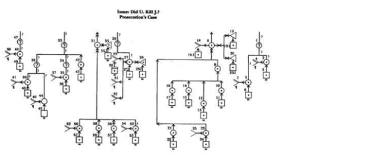
Figure 1.1
In 1958, philosopher Stephen Toulmin published his influential book The Uses of Argument, which presented a simple argument mapping scheme.
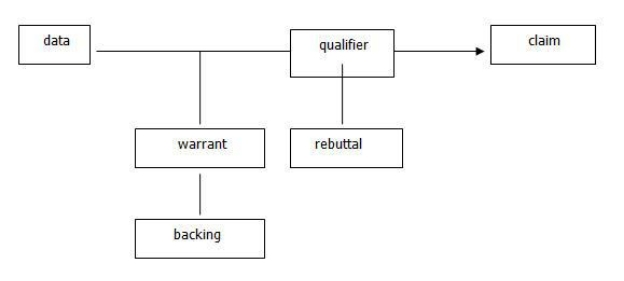
Figure 1.2
In the 1990s, with the arrival of the personal computer and graphics software, argument mapping started to become more widely used. One of the leaders in the field is Robert Horn, who has produced argument maps of very complex debates.
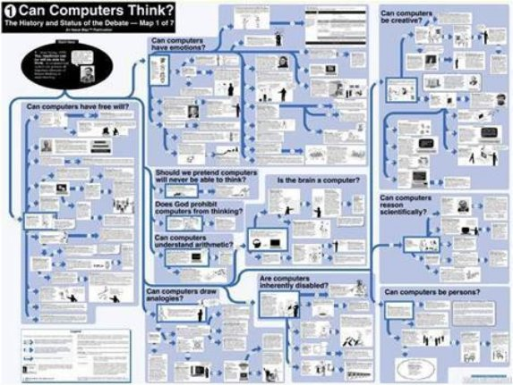
Figure 1.3
The most recent development has been the development of quality software tools /programs dedicated to producing argument maps, such as Rationale.
As you can see from these examples, there are many different kinds of argument mapping. What they have in common is the graphic rendition of evidential relationships, that is, how some claims are evidence for or against other claims.
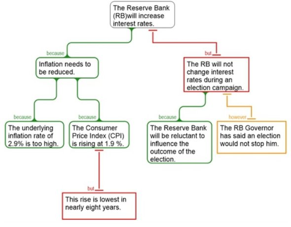
Figure 1.4
Why Map Arguments?
There are many reasons to learn argument mapping:
The method Critical Thinking with Rationale includes a large amount of exercises with model answers enabling you to master argument mapping.
1.4 Rationale
Besides argument mapping, Rationale helps you write a well-structured and therefore more convincing argument.
In the following, Rationale shows you how to structure the necessary steps in the process of writing. After that, Rationale will show you, on the basis of an example, how to produce a well-written text. (Reference: www.ReasoningLab.com )
|
Step 1. Organize Information We have no difficulty in locating information. The key is that the information is selected and structured appropriately. With Rationale’s grouping maps you can drag information from the web onto your workspace and include color, hyperlinks and images. The structured, pyramid- like maps provide a guide for students to structure the information in such a way that reveals the connections between the main topic and its various themes or categories. 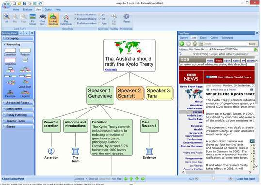 Figure 1.5 |
|
Step 2. Structure Reasoning Many people provide opinions but rarely provide reasons to support their view. Rationale’s reasoning maps encourage people to support their responses, and to consider different opinions. It uses color conventions to display reasoning – green for reasons, red for objections and orange for rebuttals. It also includes indicator or connecting words, so that the relationship between statements is clearly understood. 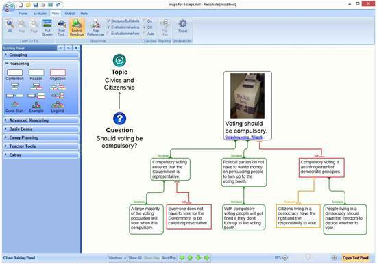 Figure 1.6 |
|
Step 3. Consider Evidence A test of a solid argument is how good the evidence is that underpins the claims. Rationale’s basis boxes provide a means of identifying the basis upon which a statement is given. The icons provide a visual guide as to the range of research utilized, and the strength of the evidence that is provided. 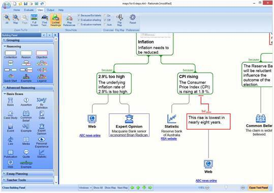 Figure 1.7 |
|
Step 4. Identify Assumptions We often talk about analyzing arguments. This can mean a few things, including looking at the logical structure of the argument to ensure it is valid or well-formed, and also identifying assumptions or co-premises. For those who require higher levels of analysis, Rationale provides the analysis map format to show the relationships between main premises and co-premises. 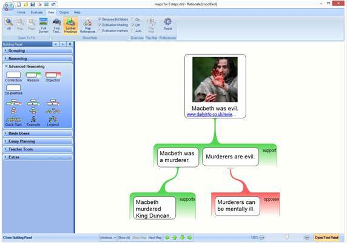 Figure 1.8 |
|
Step 5. Evaluate Arguments Once arguments for and against an issue have been logically structured, they need to be evaluated. Rationale provides a visual guide for the evaluation of claims and evidence – the stronger the color, the stronger the argument, while icons designate acceptable or rejected claims. While learning this process of evaluating arguments, color and icons provide immediate understanding and communication of the conclusion. 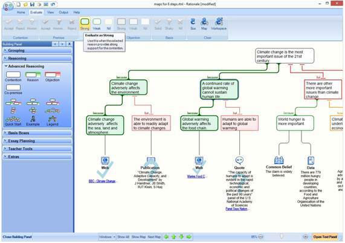 Figure 1.9 |
|
Step 6. Communicate Conclusion Presenting ideas orally or in writing is crucial, and is often the distinguishing feature between good results and average ones. Rationale has essay and letter writing templates to build skills and confidence. Templates provide instruction and generation of prose. When exported, there is a structured essay plan with detailed instructions to assist an understanding of clear and systematic prose. 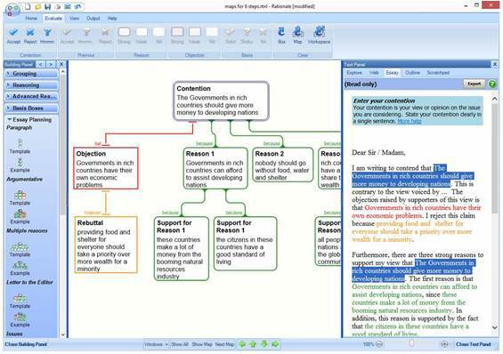 Figure 1.10 |
Example: ‘Wind farms…to be or not to be?’
|
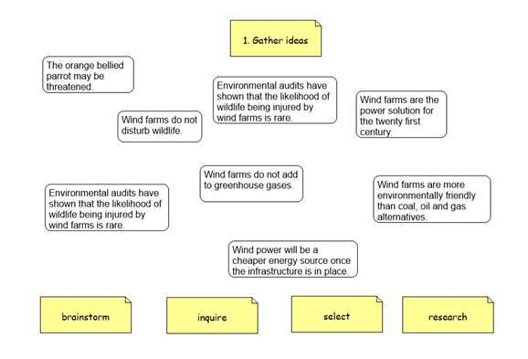 Figure 1.11 |
|
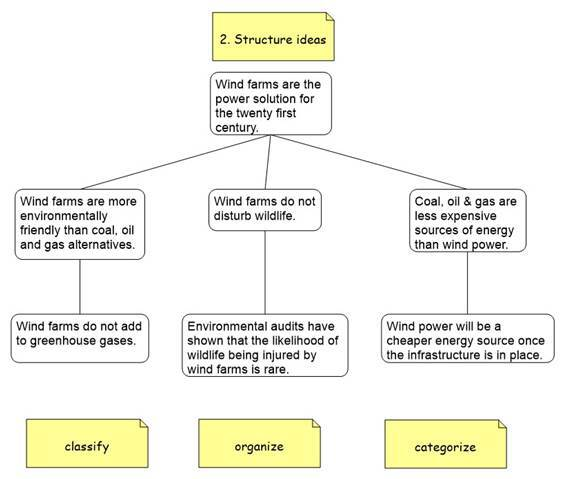 Figure 1.12 |
|
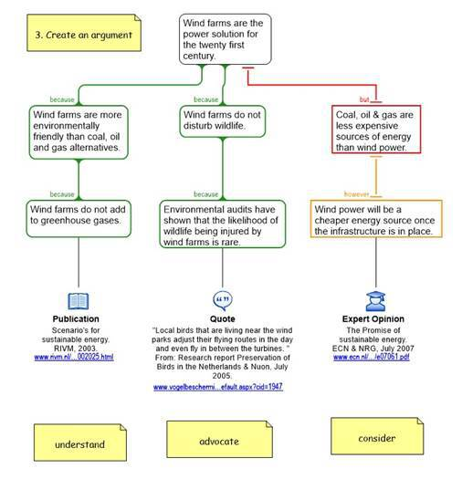 Figure 1.13 |
|
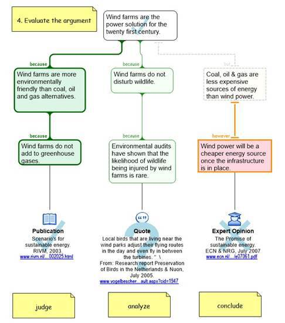 Figure 1.14 |
|
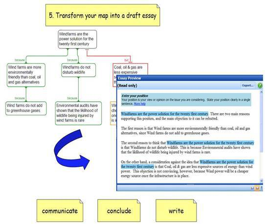 Figure 1.15 |
|
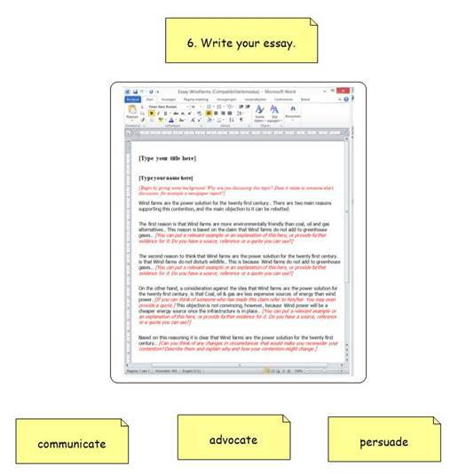 Figure 1.16 |
2 Topics Critical Thinking with Rationale
The critical thinker is a clear and accurate thinker. He uses his instruments – concepts – as carefully as a carpenter uses his tools.
As said before, knowledge of the theory is necessary for the development of critical thinking skills.
For this purpose the framework of concepts – the Topics – is essential, and explained in detail below. These Topics are classed under five important skills: grouping, reasoning, analyzing, structuring and evaluating.
If you want to quickly check the meaning of a Topic, consult the list of Definitions, which will provide you with short definitions of all the terminology as used in the method (of which the Topics form a part).
Topic 1: Grouping
Grouping is one of the most fundamental aspects of thinking. Although it is not a reasoning activity, a solid grasp of grouping is very important for good reasoning and argument, since in complex arguments reasons ought to be properly grouped together. he basic notion of a group is very simple and familiar:
A group is a collection of items which belong together in some way.
identifying a suitable grouping principle (see below),
identifying the items which belong to the group thus defined, and
presenting the items in a clear and orderly way.
Grouping Principle
A grouping principle is an explicit statement of the essence of the group, i.e., the sense or respect in which the items belong together. It is important to articulate the grouping principle as clearly and precisely as possible. Often groups are poorly formed because the grouping principle is confused or vague.
Coherent Groups
Here ‘coherent’ just means properly thought-out and presented. A coherent group should be:
|
1. Complete |
No gaps, nothing missing; everything which belongs in the group should be present. |
|
2. Internally Distinct |
No overlaps; each item in the group should be genuinely distinct or separate from all the others. |
|
3. Minimal |
No outsiders; nothing should appear in the group which does not really belong. |
|
4. Ordered |
Items should be listed in the most natural or appropriate order. |
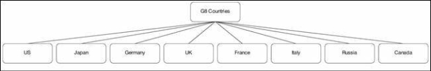
Figure 2.1 Countries listed in order of GDP (IMF rankings)
MECE
Sometimes the acronym MECE is used as shorthand for a properly formed group. MECE stands for ‘Mutually Exclusive, Collectively Exhaustive’ and is just a fancy way of saying ‘no overlaps, no gaps.’
The problem with MECE, however, is that it does not conform to itself; MECE is not complete as a list of the properties of a properly formed group (i.e., its two principles are not ‘collectively exhaustive’).
See also: Topic Hierarchical Grouping
Topic 2: Hierarchical Grouping
We are all familiar with the notion of a hierarchy, i.e., structures of the following kind:
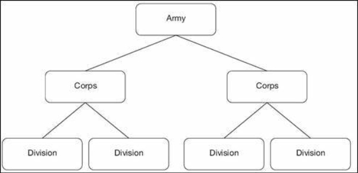
Figure 2.2
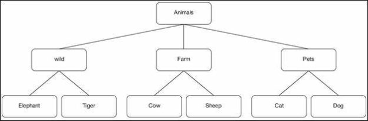
Figure 2.3
There is a range of metaphors to describe hierarchies, including:
A hierarchy is like a tree, with one trunk, many branches, and many leaves, though in the diagrams above the trees are upside down with the topmost item being the root
Drawing on the notion of a family tree, we describe items in the hierarchy as having a parent and children
A hierarchy sometimes resembles a pyramid, with a wide flat base and each level narrower than the one below.
A hierarchy is a nested structure of groups and subgroups, with all the children of an item constituting one group.
Hierarchical grouping is organizing items and groups into hierarchical structures.
A coherent hierarchy is one that is well-thought-out and well-presented. The main aspects of coherence for hierarchies are:
1. Coherent Groups
The hierarchy’s constituent groups should of course be themselves coherent – i.e., complete, internally distinct, minimal, and ordered.
2. Abstraction
The main principles of abstraction for hierarchies are captured in this simple diagram:
Higher = more general. The ‘higher’ in the hierarchy (closer to the root) the item, the more general or abstract it should be.
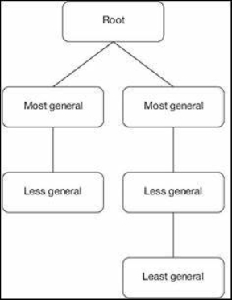
Figure 2.4
Level Consistency. Items at the same level should be at approximately the same level of abstraction, even across branches.
Level Completeness. All appropriate levels of abstraction should be present; there should be no ‘missing rungs’.
3. Congruence
A hierarchy is fully congruent when similar grouping principles are used throughout the hierarchy. Congruence has two aspects:
Horizontal Congruence. Groups at the same level (e.g., B1, B2 and C1, C2) have the same grouping principle.
Vertical Congruence. Groups have similar grouping principles to those immediately above and below them.
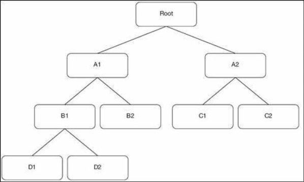
Figure 2.5
Desirable, not compulsory
Ideally, a hierarchy will satisfy all principles of coherence, but in some circumstances you may want to relax some of the constraints. This is OK as long as you understand clearly what you are doing and why you are doing it.
See also: Topic Grouping
Topic 3: Critical Thinking
Critical thinking, in a nutshell, is the art of being right.
People think in many different ways. Some of those ways of thinking are more reliable than others, in the sense that they are more effective in helping people determine which propositions are true and which are false.
Critical thinking, by definition, is thinking in those more reliable or effective ways. It is applying the thinking techniques that work best in helping you arrive at knowledge rather than error.
Critical thinking is the active, skillful deployment of those general principles and procedures of thinking which are most conducive to truth or accuracy in judgment.
But what are those general principles and procedures? It has taken many centuries to answer this question, and we still have not figured it out completely. However, we do under- stand the basics pretty well.
The foundation of critical thinking is understanding how claims are supported or op- posed by evidence, i.e., the information that is relevant to whether the claim is true or false. Any particular piece of evidence can be cast in the form of a reason for, or objection to, some claim.
So at the most basic level, the general principles and procedures you need to be a critical thinker are the ones governing reasoning and argument. In other words, they are the concepts, rules, techniques, strategies, tips and procedures described in these topics.
In understanding what critical thinking is, it might help to contrast it with some forms of ‘uncritical’ thinking:
Accepting things purely on faith.
Thinking that any person’s beliefs, including your own, are ‘true for them’ and cannot be mistaken or criticized.
Thinking that your beliefs or worldview somehow require your allegiance. On the contrary: your beliefs should serve you, and they will do that best if they are true.
Being too lazy to seek evidence or challenge beliefs.
The nature of the critical thinker was described well by Francis Bacon in the 17th century:
‘For myself, I found that I was fitted for nothing so well as for the study of Truth; as having a mind nimble and versatile enough to catch the resemblances of things (which is the chief point), and at the same time steady enough to fix and distinguish their subtler differences; as being gifted by nature with desire to seek, patience to doubt, fondness to meditate, slowness to assert, readiness to consider, carefulness to dispose and set in order; and as being a man that neither affects what is new nor admires what is old, and that hates every kind of imposture. So I thought my nature had a kind of familiarity and relationship with Truth’. – from The Advancement of Learning.
See also: Topic Proposition
What is knowledge? This question is answered in different ways in different contexts, but for our purposes, the classical philosophical definition is the most appropriate:
Knowledge is justified true belief.
That is, you genuinely know something when you believe it, you are justified in believing it, and it is actually true.
Suppose, for example, you believe that the No.19 tram goes along Royal Parade in Melbourne, Australia. If the No.19 tram does not go along Royal Parade, you do not know that it does; you merely believe that it does, and you are mistaken.
If the No.19 tram does go along Royal Parade, you have a true belief. But suppose you only believe it because you just took a wild, very lucky guess. Then you still do not know that it goes along Royal Parade; you merely have a belief which, as it happens, is in fact true. You need some proper basis or justification for your belief.
Epistemology
In fact, the real story is considerably more complicated (1). The study of knowledge – of what it is to know something – is known as epistemology:
Epistemology is the philosophical study of the nature of knowledge.
Epistemologists ask questions such as:
What is knowledge, anyway?
Under what conditions can somebody be said to know something?
What sorts of things do we know?
What are the best procedures or methods for obtaining knowledge?
Do we really know anything at all?
If you are interested, you can study these topics in detail in one of the various upper-level philosophy subjects in this field.
See also: Topic Critical Thinking
------
(1) See: http://plato.stanford.edu/entries/knowledge-analysis
When you hear the word ‘argument’, your first thought might be of people disagreeing, even yelling at each other – or worse!
Logicians (that is, people who study reasoning) tend to use the word rather differently. Roughly, an argument in this sense is what people provide when they try to show that a certain claim is true – or alternatively, that a certain claim is false. For our purposes (2),
An argument is an integrated set of reasons or objections bearing upon some claim.
We use the term contention for a claim upon which an argument bears.
What does it mean to ‘bear on’ a contention? It just means that the argument has been presented by somebody as relevant to whether the contention is true or not.
Reasons and objections are themselves sets of claims, known as premises. So it is possible to think of an argument as a structured set of claims bearing upon a contention.
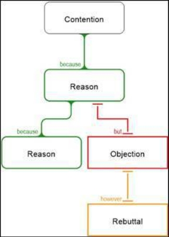
Figure 2.6 An example of a complex argument
Simple and Complex
In the simplest case, an argument would be just a single reason, or a single objection. We refer to these as simple arguments. Complex arguments are made up of multiple reasons or objections connected in an integrated structure.
-----
(2) Our definitions here differ slightly from what you might find in standard logic textbooks. Logicians typically refer to the claim, upon which an argument bears, as the conclusion, and define an argument as a set of claims, one of which is a conclusion and the others of which provide evidence for that conclusion. We believe, of course, that the usage recommended here is more natural and useful.
Good Arguments and Bad Ones
Not all arguments are good arguments! Good arguments are the ones that give us a solid basis for believing or disbelieving the contention. Bad arguments are ones that do not. Evaluation is the process by which we judge whether an argument is good or bad.
What are Arguments for?
Arguments are attempts to trace the web of implications among our ideas – that is, how accepting some claims should affect our acceptance of others. Thus a simple argument with one reason says, roughly, that if you believe the premises, you had better also believe the contention.
Arguments are used in a number of different ways:
Including
.To justify. Suppose I want to show that my belief in a certain claim is appropriate. I can use arguments to show that the claim is true because it is supported by other claims which are true. In other words, I can use arguments to justify my claim.
.To persuade. Arguments can be used in the attempt to persuade another person to believe (or reject) a claim. This activity is argumentation.
.To infer. Arguments can be used to extend our knowledge by showing that certain claims we already believe provide evidence for another claim. This process of drawing out the implications of what we know by chains of arguments is inference.
Arguments and Argumentation
The word ‘argument’ is often used to refer to a disputatious activity, as in ‘There was an argument going on about who should inherit the old man’s Bugatti.’ Argument as an activity naturally involves arguments in the sense of sets of reasons and objections. To distinguish these subtly different notions, we refer to the activity of argument as argumentation.
See also: Topic Reason and Evaluating Reasons
The English word ‘reason’ is used in many different ways; when used as a noun, it can refer to a number of different kinds of things. However, when studying reasoning and argument, we are mostly interested in just one of these kinds of reasons. In this sense,
A reason is a group of claims, known as premises, treated as jointly providing evidence that another claim is true.
Reasons of this kind are logical or evidential reasons. These contrast with another large and important category of reasons, the explanatory reasons or explanations.
Note that although a reason is a group of claims working together, often in ordinary dis- course only one of those claims is actually presented (see enthymeme). In such situations people often refer to that one claim as the reason, though strictly speaking it is only part of the full reason.
Reasons and Evidence
What is ‘providing evidence that another claim is true’? The basic idea is that, if the reason is any good at all, the premises make it more likely that the contention is true. We talk about this special relationship in a variety of ways:
A reason supports the contention.
A reason lends weight to the contention.
A reason lends credence to the contention.
A reason provides a basis for believing the contention.
A reason proves the contention (if it is very good).
You can infer the contention from the reason.
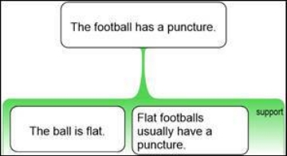
Figure 2.7
Good Reasons and Bad Reasons
What makes a group of claims a reason? Answer: being treated as evidence relating to that claim. To be a reason is to be sincerely put forward or accepted as a reason by somebody.
This has a very important consequence: reasons can be bad. The person advancing the reason probably thought it was pretty good, but may have been confused about that.
So when is a reason a good one? There are two main dimensions to the quality of a reason. To be good, a reason should be
Well-formed. The reason must be built correctly. The premises must relate to the conclusion and to each other in the right kind of way. For more on this, see below.
Strong. The reason must be such that make the conclusion substantially more likely to be true than it would be in the absence of that reason.
These dimensions are not independent of each other. In order to have strength, reasons must be well-formed. Still, it is quite useful to think of reasons from these two distinct perspectives.
See also: Topic Evaluating Reasons
An objection is a special kind of reason – one that provides evidence against a claim.
An objection is a group of claims, known as premises, treated as jointly providing evidence that another claim is false.
We talk about the special relationship between an objection and the other claim in a variety of ways:
An objection provides evidence against a claim, i.e., evidence that it is false.
An objection opposes a claim.
An objection undermines a contention.
Objections and Reasons
Since objections provide evidence that a claim is false, you can often treat an objection as a reason to think that the opposite of the claim is true. In other words, an objection to claim C is a positive reason for ‘It is not the case that C’ (technically known as the negation of C).
Generally, it is easier to deal with reasons rather than objections, so we prefer the ‘reason’ form to the ‘objection’ form. In many cases, however, it is important to use the ‘objection’ form. For example, in critical evaluation we are trying to represent and evaluate reasoning presented by somebody else. If that person presented their reasoning in the form of an objection, we should evaluate it as such.
Objections to Reasons
Often a person appears to be objecting not to a claim directly, but to a reason. The objection says, in effect, ‘that reason is no good.’
Upon closer inspection, such an objection may take one of two forms. First, it may be providing evidence against the truth of the premise (or one of the premises). In this case it can be described as a ‘premise objection’ – an objection to a premise. Second, it may be providing evidence that the premise does not support the main contention. In this case, it is known as an inference objection. Every inference objection can, however, be shown to be an objection to an as-yet-unstated premise.
Rebuttals – Objections to Objections
Just as there can be objections to reasons, there can be objections to objections, known as rebuttals. A rebuttal provides evidence that the original objection is no good. As with objections to reasons, there are two kinds: premise rebuttals, and inference rebuttals.
|
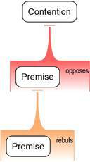 |
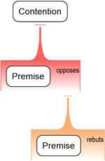 |
Figure 2.8 Premise Rebuttal Figure 2.9 Inference Rebuttal
Objections versus (mere) Denials
A proper objection provides evidence against a claim; it is not just rejecting it. For example, if you say ‘Money is the path to happiness,’ and I say ‘That’s absurd!’ I have not made an objection in the current sense. I have merely denied the truth of your claim.
To raise an objection I must provide some further information which might rationally persuade you that your claim is false. For example, I could say ‘There is considerable statistical evidence that beyond a certain minimum level, wealthier people are not happier than less wealthy people.’
Mere denials can be quite blatant, but people often disguise them. They try to act as if they have provided a genuine reason to reject the contention, but when you look carefully, they have not provided any distinct evidence.
See also: Topics Reason and Inference Objection
Often it is reasonable to accept a claim as true even in the absence of any arguments for or against it. For example, suppose you are in a restaurant, and the waiter says ‘I’m sorry, there is no more barramundi tonight.’ Usually it would make sense to take the waiter’s word for it, and accept that you did, in fact, miss out on the barramundi. Put another way, your basis for accepting that the barramundi is all gone is simply the waiter’s assertion to that effect.
Notice that the waiter’s assertion is not an argument. In saying that ‘there is no more barramundi tonight’ the waiter has not provided any evidence that there is no more barramundi; he has simply said that there is none.
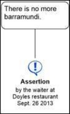
Figure 2.10
More generally, assertion by another person is one of many kinds of non-argumentative
bases you might have for accepting a claim.
A basis is any source of rational support for a claim other than a reason or objection.
Other bases include expert opinion, personal experience, common belief, example, publication, and by definition.
Evaluating Bases
Although bases are not arguments, they can be evaluated in terms of the extent to which they provide rational support for a claim. For example we can evaluate assertions as bases for the asserted proposition. We might accept that there is no more barramundi because the waiter said so, but no thoughtful person would accept that global warming is uncertain because an oil industry lobbyist said so.
We normally evaluate arguments in terms of strength. We could, similarly, talk of bases as being more or less strong, but this would be muddying the waters, since bases and arguments are somewhat different in nature. A suitable alternative is to evaluate bases as having degrees of solidity – solid, shaky, worthless etc.
When judging the solidity of a basis, we should use criteria appropriate to that basis. For example, the solidity of an assertion as a basis turns on issues such as: Is the person making the assertion reliable? Is he being sincere? Does he know what he is talking about?
Converting Bases into Arguments
It is always possible to convert a basis into an argument, by articulating it explicitly in the form of a claim or claims. Thus I can accept that there is no more barramundi on the basis that the waiter said so; or, I can construct for myself an argument such as the one below. Notice that the criteria for evaluation of the basis make an appearance in the premises of the argument.
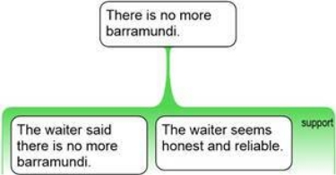
Figure 2.11
Regresses and Terminals
Bases address a profound issue in the evaluation of arguments. We often hear the supposed principle that a critical thinker only ever accepts claims on the basis of good arguments. However, this cannot always be true, for it creates what philosophers call an infinite regress. Arguments are made up of premises, which must be accepted if the arguments are to provide any support. Hence, if we subscribe to the principle, we must look at the arguments for those premises, and so on forever.
It appears that the critical thinker would never get to accept anything, because she would never complete the infinite task of investigating all the arguments. The regress can only be broken if there are situations in which we can reasonably accept claims as true without investigating further arguments. This is where bases come in; they allow us, provisionally at least, to rationally accept claims in the absence of explicit arguments. They are stopping points or terminals in the process of determining whether a claim has rational support.
Topic 9: Proposition
What is a proposition? There is much philosophical discussion (3) on this topic, but for our purposes,
A proposition is a thought that is capable of being true or false.
Examples
|
Thought |
Proposition |
True or False? |
|
The earth revolves around the sun. |
Yes |
True |
|
Winter is warmer than summer. |
Yes |
False |
|
revolves |
No |
Neither |
|
|
A thought like this cannot be either true or false on its own. It can combine with other thoughts to form propositions (e.g., the first one above). |
|
|
global warming |
No |
Neither |
|
|
Similarly, this thought is not yet ‘fleshed out’ enough to count as a proposition. It is what we refer to as a thought bite. |
|
|
Fermat’s last theorem |
Depends |
|
|
|
The thought Fermat’s Last Theorem does not assert anything. It is about a theorem of Fermat; his last one, to be precise. That theorem (what is it? do you know? can you entertain that thought?) is a proposition and is true (4). |
|
|
I am here. |
Yes |
True |
|
|
In fact this is what is known as a necessary truth. It cannot be false, whenever entertained by anyone. |
|
|
Would you like tea? |
No |
Neither |
|
|
This thought anticipates an answer which may be true or false, but cannot be true or false itself. |
|
|
Colorless green ideas sleep furiously |
No |
Neither |
|
|
The thought is nonsensical (supposedly). (Chomsky, 1957. Syntactic Structures) |
|
As illustrated in the examples above, there is a close connection between propositions and grammatical sentences of a language such as English. Every proposition corresponds to a grammatical sentence, though not every grammatical sentence expresses a proposition. Declarative sentences are those which express propositions.
-----
(3) See: http://plato.stanford.edu/entries/propositions
(4) See: http://mathworld.wolfram.com/FermatsLastTheorem.html
Topic 10: Identifying Arguments in Prose
Almost all the time, reasoning is presented in what we call prose – i.e., in streams of words and sentences, whether spoken or written. Any person hearing or reading argument-laden prose has the task of figuring out what arguments are being conveyed:
To identify an argument in prose is to locate an argument within a body of prose, and to specify clearly what it is.
Locating
To locate the argument is to be able to say where, exactly, it occurs in the prose; and conversely, what parts of the prose are (and are not) parts of the argument. When dealing with simple arguments presented in short texts, this may be straightforward. The more usual situation, however, is that the argument is complex, and is interwoven in the prose, with a lot of other material, making the task of pinning it down rather more difficult.
Specifying
It is one thing to know where an argument is, but knowing exactly what it is, is another thing entirely. Thus the second part of the identification task is being able to say ‘in your own words’ what the author was trying to argue. In other words, the problem is to re-present the argument
fully
clearly and unambiguously
correctly, i.e., being faithful to the argument actually presented in the prose.
In the ideal case, you would have worked up the argument into canonical form. A good argument map presents an argument fully and clearly, so the ‘specifying’ sub-task can be thought of as mapping the argument in the prose.
A Challenging Task
Trivial cases aside, identifying arguments in prose is a tricky business, because:
Often the author of the prose has weak reasoning skills, has only a weak grasp of the argument to begin with, and is not good at drafting argumentative prose.
The prose generally is trying to convey much more than just the argument itself. The additional material becomes mixed – or entangled – with the argument.
An author may be more focused on persuading the audience by means more foul than fair, i.e., by relying on various rhetorical tricks rather than clear display of logical reasoning.
Due largely to the distinctive structure of complex arguments, there is an inherent tension between presenting an argument clearly and producing natural, flowing, enjoyable prose.
Top Down Approach
Given the challenges involved, it helps to take a careful, systematic approach to argument identification. One systematic approach is ‘top down’. First, try to establish the main contention, i.e., the main issue being argued or disputed. Second, identify in the prose, and state clearly, the reasons or objections bearing directly upon it. Third, identify the reasons or objections bearing upon those, repeating as necessary.
Bottom Up or Jigsaw Approach
Alternatively, you can proceed in the other direction, i.e., first identifying in the prose all the claims which appear to be part of the argument, and then trying to piece them together into a larger structure. This is like doing a jigsaw, where two pieces ‘fit’ if one belongs to a reason for the other.
Note, however, that some pieces may not belong to the jigsaw at all, and many pieces of the jigsaw are missing, since authors generally do not state many of the claims which form parts of their arguments.
See also: Topic Argument
Topic 11: Identifying Contentions
Recall that a contention is a claim which is being argued for (or against), i.e., a claim which has at least one reason or objection bearing directly upon it.
When somebody presents an argument in a text, your task as listener or reader is to figure out what that argument is. The first and most important aspect of this is figuring out what the contention is.
Identifying a contention is interpreting an argumentative text to identify which of the author’s claims is functioning as a contention, i.e., being argued for (or against).
Picking out contentions is a skill that improves with practice.
Identifying Main Contentions
The main contention of a multi-layer argument is a contention which is not itself part of any reason or objection; it is at the top (or trunk) of the argument tree.
In an argumentative text, the main contention is generally the main point the author wants to convince you to believe; it is what all their reasoning leads to. The main contention is the answer to the following kinds of question:
Why is the author bothering to tell me all this stuff ?
What is the main point the author is trying to convince me of ?
What is the most important thing the author is arguing for or against?
Note that a single argumentative text may contain a number of quite distinct complex arguments. When that happens, there are a number of main contentions, and lots of subsidiary contentions.
Guidelines for Identifying Main Contentions
We can often find main contentions intuitively – without really knowing how we did it. But sometimes it is not so easy. It is easy to be sidetracked by interesting, novel, or outrageous claims; yet these may not be the main thing the author is arguing for.
Here are some guidelines to help you identify main contentions:
Authors often help us by saying right up front what their contention is going to be. Be careful, however: Sometimes the title is not supplied by the author. In newspapers, for example, titles are often supplied by the editors, who may have misrepresented the author’s main point.
Contention indicators are words like ‘therefore…’. Sometimes authors will use elaborate phrases to signal their main contention: e.g. ‘So the upshot of all this is…’
To determine whether a claim is the main contention, ask whether it is used in the text to support some further claim, i.e. whether some further claim depends on the claim in question being true. If the answer is ‘no’, you have probably identified the main contention.
Hidden Contentions
Sometimes the main contention of a text is not explicitly stated anywhere in the text. This can happen particularly if there is an ongoing debate on an issue, or if the argument is offered in a context where everyone is likely to understand what it is about. Alternatively, an author may offer a number of reasons and say: ‘Now you can draw your own conclusion’.
Arguments are usually expressed in a stream of words. Sometimes we say them out loud, and sometimes we write them down in written form (letters, essays, reports etc.). The idea is to convey arguments from one person (the ‘author’) to others (the ‘audience’) using words as the vehicle or medium of communication.
The challenge facing the audience is to take the stream of words in, and figure out what the argument is. That is, the audience has to identify the claims and how they ‘hang together’ in an argumentative structure. This is quite a difficult thing to do, especially as arguments get more complex.
Fortunately, authors can make life a little easier for their audiences by inserting little ‘helpers’ – words or phrases which explicitly signal the structure of the reasoning. These logical signposts are known as argument structure indicators, or just indicators:
An [argument structure] indicator is a word or phrase whose role in an gumentative text is to help the audience identify the structure of the reasoning.
Examples
Here is a typical piece of argumentative writing:
Grad students can start successful companies. The three big powers on the Internet now are Yahoo, Google, and Microsoft. Average age of their founders: 24. And if grad students can do it, why not undergrads?
Note that, as is often the case, the author has provided no argument structure indicators. Here is a version rewritten to include some indicators:
The three big powers on the Internet now are Yahoo, Google, and Microsoft. Average age of their founders: 24. Together, these facts establish that grad students can start successful companies. Hence, undergrads should be able to start successful companies.
The rewritten version is more labored, but it does make the structure of the reasoning more obvious.
Types of Argument Structure Indicators
There are dozens of words or phrases that are commonly used as indicators. It is common to classify indicators in terms of the nature of what they are pointing to, i.e., what immediately follows them. Here is a small selection of classic argument structure indicators:
|
Reason Indicators: |
Objection Indicators: |
Contention Indicators: |
|
because… follows from… for… since… as… on the grounds that… |
although… but… however… |
therefore… we can infer… |
Indicators are Clues
Indicators are best thought of as clues to argument structure. Some (e.g., proves that…) are highly reliable. Others are very ambiguous; they may be indicating argument structure, but they may also be playing a quite different role. The classic reason indicator because is a good example; very often, it is pointing not to a reason, but to an explanation.
Lack of Co-premise Indicators
It is a remarkable fact that, while there are dozens of reason indicators and contention indicators, there are almost no words or phrases which commonly indicate that two claims are co-premises.
The word and is often used, but and has many other uses as well. Identifying co-premise relationships in typical argumentative prose requires a very strong intuitive sense for how arguments hang together.
See also: Topics Identifying Arguments in Prose, Holding Hands Principle and Inference Objection
Topic 13: Indicators – examples
Reason Indicators:
|
because… |
She must have left, because her car isn’t here. One must presume that Al Qaeda lacks nuclear and biological warfare capability, because if it had such weapons, it would have used them by now. Note, however, that ‘because’ is not always an (evidential) reason indicator. It very often signals an explanation, as in: She left because she was tired. |
|
follows from… |
The fact that she doesn’t care about me follows from her insolence. The decrepitude of our taxation system follows from the fact that strawberry milkshakes are taxed at a different rate to chocolate milkshakes. It follows from the low number of participants that the survey is not very reliable. |
|
is demonstrated by… |
This shape is definitely a circle. This is demonstrated by the fact that every point in its perimeter is equidistant from this central point. |
|
may be inferred from… |
Peter is married, which may be inferred from his wearing a wedding ring. |
|
for… |
The murder of the taxi driver must have been planned, for in Melbourne people don’t normally carry guns. |
|
in view of… |
The security officer must have stolen the diamonds, in view of the fact that only she had access to the safe. In view of the fact that the nation state is a modern invention, it is ridiculous to speak of Greeks and Turks at 700 BC. |
|
since… |
My car is reliable, since I bought it new only three months ago. Note, however, that ‘since’ often refers to a temporal duration: Ever since I bought it, my car has been reliable. Another example: Since you are a strict vegetarian, you should not eat this pie. c.f. Since you became vegetarian you haven’t eaten this kind of pie. |
|
the reason being… |
He cannot have fired this gun at 6.45, the reason being that he was already dead at 5.15. |
Objection Indicators::
|
but… |
One might think that Shakespeare was Italian; but one doesn’t need to be Italian to write about Italy. |
|
although… |
Although the oldest known fossil organisms were ocean dwellers, life may actually have developed in freshwater ponds. |
Conclusion Indicators:
|
accordingly… |
She was in Rome at the time. Accordingly, she could not have burned the place in London. |
|
demonstrates… |
Terry Lane’s description of our involvement in Gallipoli as a case of ‘not minding our own business’ demonstrates that he has no concept of what this sacrifice means to an increasing number of ordinary Australians. [Warren Mills] |
|
establishes… |
The invective expressed about his mother in his diary establishes that he wanted to kill her. |
|
implies… |
Her silence implies that she knows more than she cares to admit. |
|
justifies… |
The fact that all our monitoring equipment has failed to pick up anything justifies the belief that the ghost is a figment of Mrs. Muir’s imagination. |
|
means… |
Pierre’s high temperature means that he has some sort of viral infection. |
|
shows… |
The huge number of alcohol-related car accidents shows that the campaign against drink driving is a failure. |
|
suggests… |
Clinical evidence from hundreds of trials suggests that this substance is carcinogenic. |
|
consequently… |
According to our records he was already dead at 5.15, consequently he could not have fired the shot at 6.45. |
|
hence… |
Mandy has more experience than Mindy in these matters, hence you should follow her advice rather than Mindy’s. |
|
so… |
The sample size is too small, so you should not expect statistically reliable results. |
|
therefore… |
Only couples have entered this room, therefore there must be an even number of people in it. |
|
thus… |
Most people are ignorant of matters of state, thus democracy is a poor form of government. |
|
proves… |
This film clearly shows you to be holding an animated discussion with Sir Rodney, which proves that you were lying when you denied knowing him. |
|
I conclude… |
From the fact that Ross chaired the meeting I conclude that Charlie has resigned as chairman. |
|
infer… |
From the color of this litmus paper we can infer that the substance is acidic. |
|
follows that… |
As soon as one knows that any particular type of system is capable of emulating any cellular automaton, it immediately follows that there must be examples of that type of system that are universal. (c.f. follows from). |
See also: Topic Indicators
What is Refining a Claim?
When building a brick house, you need decent bricks, not ones that are irregular or crumble away. Similarly with arguments. Recall that the basic building blocks of arguments are claims. Solid arguments require clear, solid claims.
Unfortunately, often when people present an argument, they express their claims poorly. In order to understand what their argument is, or to evaluate it, you may have to take their claims and rework them so they are clear and definite:
To refine a claim is to reformulate it until the claim is as clear and definite as required for argument analysis and evaluation.
How to Refine a Claim
There are many ways claims may need to be improved for serious critical thinking. Here are seven guidelines for refining claims:
As far as is reasonably possible, ensure that the claim is
Note that claims are expressed in sentences. Sometimes refining a claim is really a matter of working on the sentence expressing the claim rather than the claim itself.
Declarative
Ensure that the claim is expressed in a well-formed declarative sentence.
Declarative sentences are the kind we use to make assertions, i.e., to say something is true or false.
Example
|
|
Claim expressed in a declarative sentence |
Point to note |
|
Is breakfast ready? Make some breakfast! |
None |
Questions and imperatives (orders, instructions) are not declarative; generally they do not assert anything. |
|
Do we want a nuclear rubbish dumped near our crops? |
We do not want nuclear waste dump next to our crops. |
‘Rhetorical’ questions express claims, but should be reformulated. |
|
should resign |
The Governor General should resign. |
Short phrases should be expanded into full declarative sentences. |
|
Crown roast of lamb – modern, American |
Crown roast of lamb is a modern, American dish. |
Ensure the sentence is fully fleshed out. |
|
|
|
|
Simple
Ensure that the claim is as simple as possible. In this sense,
A simple claim is one which contains only one claim, i.e., only one idea being put forward as true. A compound claim contains multiple distinct claims.
This can be tricky. Some seemingly compound claims are actually simple, and vice versa:
Example
|
|
Simple or Compound? |
Claim(s) Expressed |
Point to Note |
|
A GST (Goods and Services Tax) is regressive, and it is too burdensome for business. |
Compound |
A GST is regressive. A GST is too burdensome for business. |
Some claims contain multiple distinct claims. ‘...and...’ claims are generally compound. |
|
Elizabeth left because she was embarrassed. |
Compound |
Elizabeth left. Elizabeth was embarrassed. Elizabeth’s leaving was caused by her embarrassment. |
Some very simple- seeming claims can contain many claims. |
|
If it rains then the game will be cancelled. |
Simple |
If it rains then the game will be cancelled. |
‘If...then...’ claims are simple. Although they contain two propositions, neither of them is being claimed. Only the connection between them is being claimed. |
|
He is either a liar or a lunatic. |
Simple |
He is either a liar or a lunatic. |
‘either...or...’ claims are also simple. The constituent propositions are not being individually asserted as true. |
|
He is neither a liar nor a lunatic. |
Compound |
He is not a liar. He is not a lunatic. |
‘…neither...nor...’ claims are equivalent to ‘not…’ and ‘not...’ |
Literal
Strive to make the claim literal, i.e., to reduce metaphor.
Example
|
|
More Literal |
Point to Note |
|
Karl Kruszelnicki lumps all astrologers and astrology into one basket. |
Karl Kruszelnicki treats all astrologers and astrology as if they were the same. |
The more literal version is less colorful but makes the meaning more definite. |
|
JERUSALEM – The Mideast peace process was once again derailed Monday, when U.S.-brokered talks between Israeli and Palestinian leaders careened off their tracks into an embankment and burst into flames, burning with intensity for nearly an hour until the smoking remains were shoveled over with dirt. |
JERUSALEM – The Mideast peace process was once again halted Monday, when U.S.-brokered talks between Israeli and Palestinian leaders completely broke down. |
|
Note that it is usually impossible to remove all metaphor. Our language and thinking is deeply metaphorical. Literalness is a matter of degree. The point is to prefer the more literal to the more heavily metaphorical.
Precise
Ensure that the claim is appropriately precise.
A claim is precise if only a narrow range of situations would make it true.
The opposite of precision is vagueness.
Note: it is usually not possible or desirable to make a claim completely precise. The level of precision you need depends on the situation.
Example
|
|
More Precise |
Point to Note |
|
It is warmish today. |
The temperature is around 30 degrees Celsius today. |
Depending on location, the time of year, and the speaker, any number of temperatures might make the original claim true. The more precise version is still somewhat vague, but less so, and adequate for most purposes. |
|
The Australian Army has never let the Australian people down. |
The Australian Army has never lost a battle. The Australian Army has always performed well. |
When making a claim more precise, you may be forced to choose between a number of alternative interpretations. The alternatives may differ in truth. In this case, the second claim is closer to being true. |
Concise
Ensure that the sentence expressing the claim is as concise as possible.
A sentence is concise when it contains no superfluous words.or phrases.
For our purposes, a word or phrase is superfluous when it makes no difference to the argument. It might add something else (emphasis, stylistic flair, background information, etc.), but if this extra stuff does not affect the logic, toss it out!
Example
|
|
More Concise |
Point to Note |
|
However you look at it, it is abundantly clear that we have far more to gain by reducing greenhouse gas emissions than we have to lose. [26 words] |
We would gain far more than we lose by reducing greenhouse gas emissions. [13 words] |
The concise form is much shorter. Some nuances in the original have been lost, but it is unlikely these would have made any difference in any argument in which this claim was embedded. |
Unambiguous
Ensure that the sentence expressing the claim has no serious ambiguities.
A word, phrase or sentence is unambiguous when, in context, it has only one distinct meaning.
Ambiguity depends a lot on context. The meaning of a sentence is partly a matter of the words and structure of the sentence itself, and partly a matter of the situation in which it is uttered.
|
Ambiguous Claim |
Less Ambiguous Claim(s) |
Point to Note |
|
Jacques flew to Djibouti. |
Jacques traveled to Djibouti by airplane. Jacques escaped by going to Djibouti. |
|
|
Sars virus found in tears [newspaper headline] |
The Sars virus has been identified in tear fluid. Somebody has found the Sars virus crying. [absurd] |
|
|
|
|
|
Ambiguity and vagueness are superficially similar, but importantly different. Ambiguity is a matter of multiple distinct meanings, each of which might be quite precise; vagueness is a matter of the meaning (whether one or multiple) allowing the claim to be made true by a wide variety of situations. The sentence ‘It is 39.45 degrees’ is ambiguous (e.g., degrees Celsius or Fahrenheit?) but each of those meanings is quite precise.
Emotionally Measured
Ensure that the emotional tone of the language expressing the claim is appropriate to its meaning.
Example
|
|
Emotionally Measured |
Point to note |
|
The company’s heinous subterfuges are destroying the worker’s livelihoods. |
The company’s dishonest tactics are reducing the workers’ wages. |
Excess emotional force should be removed. |
|
Indonesian-backed militias ruthlessly slaughtered thousands of East Timorese. |
Same |
Sometimes strong emotional force is quite appropriate. |
|
The strikes caused collateral damage among non-combatants. |
Civilians were killed and injured in the bombing. |
Sometimes emotional force should be added. Euphemisms are phrases used to avoid emotional force; sometimes this is OK, but other times it obscures important matters. ‘Trying to explain the causes of his country’s civil wars, John Garang, the southern Sudanese rebel leader, told the UN Security Council last week that there had been a “failure to manage diversity”. That is one way of putting it. Another would be to say that the Arab-dominated government in Khartoum has orchestrated mass murder and rape among any ethnic group it suspects of supporting any of the country’s rebel movements.’ The Economist, Nov. 25th 2004. |
|
|
|
|
(In Rationale also referred to as Advanced Reasoning)
Topic 15: Assumption
The notion of an assumption is a familiar one, which for current purposes we define as follows:
An assumption is a proposition which somebody takes to be true without having provided or considered evidence in relation to it.
Acknowledged, Stated and Unstated (Hidden) Assumptions
Assumptions vary in the degree to which we are aware of them and recognize them for what they are.
‘I’m not going to have chemotherapy,’ said Holly Hopeful. ‘You’ve got to believe that you’re one of the lucky ones. Besides, my herbalist, Dr. Wu, is giving me natural medicines. Dr. Wu is an excellent doctor.’
Here Holly is fully aware that her belief that she will be one of the lucky ones is an assumption. This is an acknowledged assumption, one that is recognized for what it is.
Holly says, explicitly, that Dr. Wu is an excellent doctor. However she does not seem to realize that she has not considered, or provided, any evidence for this. The assumption is stated, though not acknowledged as such.
Holly has not said this, but she apparently believes, without any basis, that Dr. Wu’s medical expertise extends to cancer and its treatment. This assumption is not even explicitly stated, let alone acknowledged. Assumptions like this are unstated. Such assumptions are sometimes described as hidden, though this term is often misleading in suggesting that the assumption was actively or deliberately concealed.
Where Assumptions are Found
As illustrated above, assumptions occur frequently in reasoning, and play a variety of roles. It is important to understand where they occur, because assumptions, by their nature, are potential points of vulnerability. More often than not, when an argument has a crucial weakness, it is one of the assumptions which turns out to be the problem. Places where assumptions are often found include:
Basic premises. Recall that a basic premise is one where the arguments ‘bottom out,’ i.e., one that has no further reasons or objections bearing upon it. Basic premises (at least, those with no basis) are classic cases of assumptions.
Unstated co-premises. A co-premise which has not been stated, has not, almost by definition, been provided with any evidence; as far as the audience is concerned, it is an unstated assumption.
Bases. Any given basis is generally surrounded by a cluster of assumptions, usually unstated. For example, Holly Hopeful’s basis for taking natural medicines is Dr. Wu’s (supposed) expert opinion that such medicines would help her heal. In doing so she is assuming that Dr Wu’s expertise is relevant to cancer and its treatment.
Identifying Assumptions
Identifying the assumptions in a piece of reasoning is one of the most important and yet difficult tasks in reasoning. It requires practice, experience, and lots of imagination to uncover all the significant assumptions, while also avoiding the mistake of attributing assumptions which are not in fact required.
In case of unstated co-premises, knowledge of the basic structure of reasons and objections can greatly assist in pinning down, in succinct form, exactly what assumptions are being made.
See also: Topics Proposition and Basis
The so-called Rabbit Principle is one of the simplest, and yet most profound and useful of all rules of good reasoning. Informally, it is:
Rabbit Principle: contentions should contain no magic rabbits.
More prosaically:
Every significant term or phrase appearing in the conclusion of a simple argument should also appear in a premise of that argument.
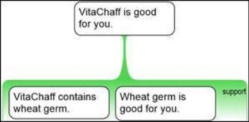
Figure 2.12
For example, consider the VitaChaff argument above. Note that the contention contains the following significant terms or phrases:
VitaChaff
is good for you
Notice also that each of these appears somewhere in the premises; indeed, in this case each one appears in a distinct premise. This argument observes the Rabbit Principle.
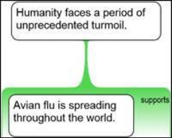
Figure 2.13
This argument is much more typical of peoples’ ordinary reasoning. The contention contains the following terms or phrases:
Humanity
faces
a period
unprecedented
turmoil
Not a single one of these appears in the premise as provided. The terms are magic rabbits; they suddenly appear ‘out of nowhere’ in the contention. In this argument there is a big gap, or ‘leap of logic’, between the premise and the contention.
Why ‘Rabbit’?
The name Rabbit Principle alludes, of course, to that most clichéd of all magician’s tricks, pulling a rabbit out of a hat. However things appear on stage, we all know that if a rabbit is pulled out of a hat, it must have already been in the hat; rabbits do not appear ‘by magic’. Similarly, if you want to prove something about Humanity, then you will have to say something about it in your premises.
Why Care about Rabbit Principle Violations?
Observing the Rabbit Principle has a number of salutary effects on our reasoning, including:
helping us articulate fully the premises needed to establish the contention,
helping us tighten the connection between premises and contention.
In short, observing the principle makes reasoning more explicit and rigorous.
The Rabbit Challenge
The Rabbit Principle is a very simple concept, but observing it fully can be surprisingly challenging. First, it is much easier than you might think to miss a magic rabbit; the eye glides over the text, often failing to notice the sudden irruption of new ideas.
Second, telling what is, and what is not, a violation of the principle often requires subtle judgment. Is ‘Humanity’ the same thing as, say, ‘billions of people’? Is the word ‘is’ significant here, for the purposes of the principle? Third, making the right adjustments in the contention, or the premises, to fix Rabbit violations can present quite a puzzle.
Fortunately, as with most skills, one gets better – and faster – with practice.
Topic 17: Holding Hands Principle
The Holding Hands Principle is an aid to good reasoning, helping us make arguments more explicit and rigorous. Like its sister the Rabbit Principle, Holding Hands is a simple idea, yet profound and very useful.
The basic idea is that in a simple argument (a reason or objection), premises should ‘hold hands’ with each other and the contention by overlapping in the terms they contain. More formally,
Every significant term or phrase appearing in a premise of a simple argument should also appear in either the contention or one of the other premises.
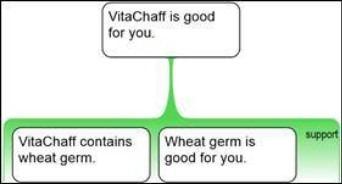
Figure 2.14
For example, consider the VitaChaff argument above. Note that the first premise contains the following significant terms or phrases:
VitaChaff
contains
wheat germ
‘VitaChaff ’ appears in the contention, and so the first premise ‘holds hands’ with the contention. Similarly, ‘wheat germ’ appears in the second premise, and so the premises hold hands with each other.
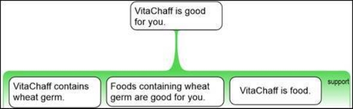
Figure 2.15
However, the Holding Hands Principle is not fully satisfied, since ‘contains’ does not appear elsewhere. The argument must be modified somewhere to remove the violation. One approach is illustrated above. Now, every significant term or phrase appearing anywhere in the premises appears somewhere else too.
Observing the Holding Hands Principle in this case has a number of effects:
It has helped ensure that no significant term or phrase is not properly bound in the overall structure of reasoning.
It has strengthened the connection between claims, by increasing the degree to which they have terms or phrases in common.
It has forced the unstated assumption VitaChaff is food into the open. (This may sound trivial, but VitaChaff might have been, say, horse feed.)
Such benefits are the reward which commonly flows from the painstaking work involved in ensuring that the Holding Hands Principle is fully satisfied.
Strategies for Removing Violations
When refining an argument to remove violations of the Holding Hands and Rabbit Principles, the following strategies can be applied:
Use exactly the same term or phrase for a concept, wherever it appears.
Strip out terms or phrases which, on reflection, are not crucial to the argument, and can be dispensed with.
Add another co-premise if necessary, but be very careful that in doing so you do not introduce additional Holding Hands problems.
Generally, objections are directed upon claims; they provide evidence that the claim is false. Sometimes those claims are themselves premises of other arguments. In such cases the objection says, effectively, ‘that argument is no good, because a premise is not true.’ In other cases, objections appear to be targeted not at any premise, but at the move from the premise(s) to the main contention. Consider:
Radichio: Things are terrible! The economy is going to pieces. It must be President Artfulwaffle’s fault. Things were fine last year before he was elected. Fennel: Why blame Artfulwaffle? Lots of other things could have caused the economy to go bad.
Fennel is not objecting to Radichio’s premise that the economy was fine before Artfulwaffle was elected. Rather, she thinks that the premise (though perhaps true) does not show that President Artfulwaffle is ruining the economy.
An inference objection is an objection to the evidential link between the premises and the contention of a simple argument.
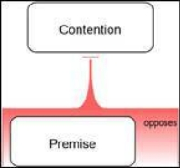
Figure 2.16 A standard objection
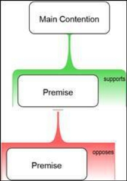
Figure 2.17 A premise objection
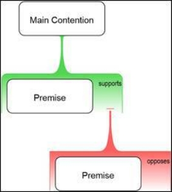
Figure 2.18 An inference objection
Converting to Premise Objections
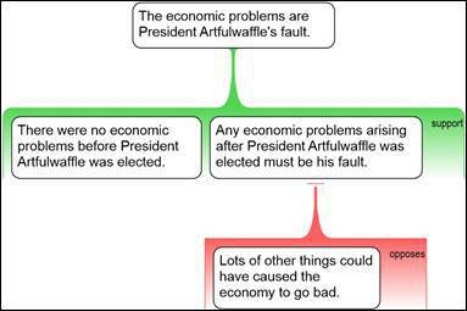
Figure 2.19
How can we reconcile the general definition of an objection as a reason to think a claim is false, with the notion of an inference objection as an objection to an evidential link (i.e., not a claim)? By realizing that every inference objection is equivalent to an objection to an as-yet-unstated premise. If we properly articulate all the premises of the first argument, we will find that the inference objection finds a natural place objecting to one of those added premises.
In the example above, Radichio’s argument has the unstated assumption that Artfulwaffle must have caused the change in the economy. Fennel’s objection is targeted on this assumption.
Genuine Inference Objections
A genuine inference objection must do more than assert that the conclusion does not follow from the premises. It must give some reason to believe that the conclusion does not follow.
Argument: Soccer must be the best sport – more people around the world play soccer than any other sport. Objection: The best sport does not have to be the one played the most.
In this example, the objection turns out to be merely denying the unstated co-premise that the best sport is the one played by most people around the world. A genuine objection would provide some substantial evidence – e.g., that ‘Historical and cultural factors, rather than just the quality of the sport, strongly influence the number of people who play it.’
See also: Topic Objection
The range and number of arguments that have been made, or could be made, is practically infinite. As you would expect, however, within this vast range there are important similarities and differences between arguments, and so we can sort arguments into various types. Some of these types crop up quite often:
An argument pattern is a common, distinctive structure of reasoning.
Argument patterns can be very helpful in reasoning and critical thinking:
Understanding. Recognizing familiar argument patterns helps us follow reasoning more easily, particularly when it gets complicated.
Constructing. We can assemble arguments more effectively when building them out of familiar components.
Evaluating. We can use our knowledge of the strengths and weaknesses typically found in arguments of a certain pattern to help us rapidly appreciate the quality of a new instance of that pattern.
Example
People very frequently reason along the following lines:
If the volcano was going to erupt soon, then we’d be detecting earth tremors. There aren’t any tremors, so we are safe for the while at least.
This is an instance of a pattern which is so common and useful it has a Latin name – modus tollens. Using symbols, we can represent the pattern as follows:
If P were true, then Q would also be true. Q is not true. Therefore, P is not true.
Where P is the claim ‘The volcano will erupt soon,’ and Q is ‘We are detecting earth tremors.’
Arguments fitting the modus tollens pattern have the rather nice feature that they are valid. This means that the premises, if true, guarantee that the contention will be true. Now, sup- pose you are interested in evaluating the argument, i.e., determining how strong it is. If you have correctly identified the argument as an instance of modus tollens, you know right away that you can put all your efforts into investigating whether or not the premises are in fact true.
Varieties of Argument Patterns
There are dozens, perhaps hundreds, of argument patterns. These include
Simple deductive argument forms, such as modus tollens.
Inductive argument patterns, such as the kind of statistical generalization used in political polling.
Argument patterns that are characteristic of particular domains, such as legal argument.
Fallacies – commonly occurring arguments that are generally poor reasoning. And many others…
Know Thy Patterns
Developing conscious familiarity with a wide range of argument patterns is a key part of acquiring advanced skills in reasoning and critical thinking. There is a direct analogy here with the development of expertise in many other fields. A jazz musician, for example, has, through years of listening and practice, acquired deep familiarity with an extensive collection of melodies, chord sequences, rhythms, etc., enabling her to perform with apparently effortless fluidity on the night. Similarly with reasoning; argument patterns are like the riffs or musical motifs of critical thinking.
See also:
- Topics Deductive Argument, Inductive Argument, Abductive Argument and Fallacy
- Rationale Wiki on www.RationaleOnline.com
In some arguments there appears to be a kind of irresistible logical force at work. In such cases, the contention follows inexorably from the premises; accept the latter and it seems you are rationally compelled to accept the former. Consider for example:
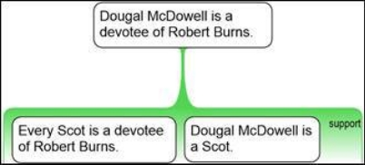
Figure 2.20
If you accept that every Scot is a devotee of Robert Burns, and you accept that Dougal McDowell is a Scot, you must also accept that Dougal McDowell is a devotee of Robert Burns.
Or, put another way – it is impossible for Douglas McDowell not to be a devotee of Robert Burns, if indeed he is a Scot, and all Scots are devotees of Robert Burns. This relationship between premises and contention is known as validity – technically, an argument is valid if it is impossible for the contention to be false if the premises are true.
Notice another thing about our example – it works just as well for Tania McTaggart as it does for Dougal McDowell. Indeed, we can abstract away entirely from Scots, and Robert Burns, and see that the real work is being done by the logical structure of the argument, rather than the meanings of the terms:
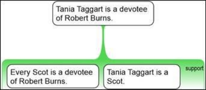
Figure 2.21
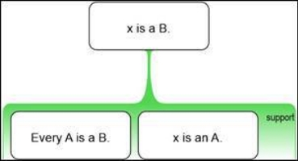
Figure 2.22
The original argument seemed utterly compelling, even though you probably do not know Dougal McDowell, because its logical form seemed to guarantee that the contention would follow.
A deductive argument is one which purports to be valid by virtue of its logical form.
Put another way, such a deductive argument tries to force you from its premises to its (main) contention by virtue of the way it is constructed. Perhaps it is constructed correctly, and you should in fact accept its contention if you accept its premises. But it might be poorly constructed, in which case the argument, though deductive, is invalid.
Deductive arguments are enormously important in logic, and in related fields such as mathematics and computer science. A large and often very technical sub-field of logic, known as formal logic, is devoted to the study of deductive arguments.
In ordinary or ‘everyday’ reasoning, we do often encounter deductive arguments, though generally these arguments belong to a limited number of simple types. More commonly, everyday arguments are not deductive. To determine whether or to what extent they guarantee their contentions, we must look at more than just the logical form; we need to know what the terms mean, and something about the domain those terms are describing.
Indeed, most everyday arguments do not even purport to be valid; they purport to increase the acceptability of their contentions, rather than guarantee them. There are many kinds of non-deductive arguments, but they are usually contrasted with inductive arguments (those involving some kind of extrapolation or generalization) and abductive arguments (those concerned with explaining some range of evidence).
See also:
- Topics Inductive Argument, Abductive Argument, Argument Pattern and Fallacy
- Rationale Wiki on www.RationaleOnline.com
Of the three major kinds of arguments commonly distinguished by logicians – the deductive, inductive and abductive – inductive arguments are probably the most common and useful.
An inductive argument is an argument in which there is some kind of extension or generalization from a situation (a ‘source’) to some wider or related situation (a ‘target’).
For example, suppose you have been given a box of chocolates, each wrapped in the same brown shiny foil. You open and eat two of them, and find that they both have a caramel syrup filling. If you conclude that all chocolates in the box have caramel filling, then you would have made an inductive inference, generalizing from the sampled chocolates to the whole ‘population’ of chocolates in the box.
Inductive Generalizations
Inductive arguments of this kind (from samples to whole populations) are known as inductive generalizations. You will be familiar with them because they get reported in the news all the time. When you hear that 87% of US citizens do not know the difference between a Sunni and a Shiite, you are hearing an inductive generalization from a sample of maybe 300 folks in places like Iowa and Ohio to their 300 million compatriots.
Inductive arguments rely on there being detectable patterns in the world. In making an inductive inference you are hoping that a new situation will be a continuation of the pattern you have seen already. If you are lucky or wise, you have identified a pattern that really does hold up.
Statistical Syllogism
An inductive argument can be driven in the other direction, from the general to the particular. Suppose you have succumbed to temptation and eaten 10 chocolates from the box; they have all had caramel fillings. You reach out for another, telling yourself that this chocolate will definitely be the last one. If you are expecting caramel again, you are expecting this particular final chocolate to continue the pattern of the previous 10. This kind of inductive inference from a more general claim to a particular case is known as a statistical syllogism.
Analogy
A third common kind of inductive argument is the use of analogy. An analogical argument picks up on the similarity between two particular situations, and extends knowledge from one to the other. For example, suppose you have eaten one chocolate with a brown silvery foil and it had a caramel filling. You pick up another, and before unwrapping it, you think
‘This chocolate seems just like the one I just ate. It probably has a caramel filling too.’ Probably unwittingly, you would have made an analogical inference.
Arguments by analogy can, of course, be much more serious. The similarities between the US interventions in Vietnam and Iraq have often been noted. One might argue that, since the Vietnam war ended in a humiliating US withdrawal, and the Iraq war is just like the Vietnam war, the US will make a humiliating withdrawal from Iraq too.
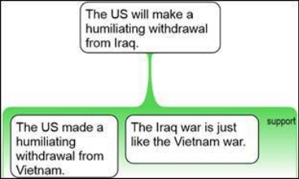
Figure 2.23
Inductive arguments, like any other arguments, can be laid out in an argument diagram or map. When these arguments are made fully explicit, there will always be a premise of some kind asserting the similarity between the source situation and the target situation.
Inductive arguments are always at risk of misfiring. This happens when reality fails to conform to the pattern we think we have identified. For centuries, Europeans believed that all swans were white, making a reasonable inductive generalization from the swans in their experience. As they later found out, when black swans were found in Australia, their generalization had been confounded by nature, whose real patterns are endlessly subtle and diverse.
How can you tell how strong an inductive argument is? There is no general answer to this, but there is, fortunately, a sophisticated science of inductive reasoning. You can begin to learn this science by studying disciplines such as probability, statistics, and scientific method.
See also:
- Topics Deductive Argument, Abductive Argument, Argument Pattern and Fallacy
- Rationale Wiki on www.RationaleOnline.com
You are walking in the park and come across a newborn chick on the ground. You look up and see a nest with a large bird glowering warily down. You can also hear chirping from the direction of the nest. You conclude, naturally, that the newborn chick had fallen from the nest.
This is abductive reasoning. In essence, it is reasoning from a body of evidence to some situation or ‘hypothesis’ that would explain the evidence. In the current example, you did not actually see the chick fall out of the nest, but you infer it probably did, because that would explain why there is a vulnerable newborn chick on the ground underneath a nest containing a mother bird and other chicks.
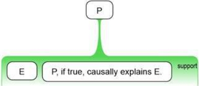
Figure 2.24
Abductive reasoning is inferring that some hypothesis is true because it would causally explain some body of evidence.
The term ‘abductive’ is derived from the Latin ab (from) and duco (lead), conveying the idea that abductive reasoning works ‘back’ or away from some phenomenon to something prior which was responsible for it.
In its simplest form, abductive reasoning considers just one hypothesis, and assumes that the hypothesis either does or does not explain the evidence. Sometimes, multiple hypotheses are entertained (e.g., chick fell out of nest; chick was thrown out of nest; chick was placed on the ground by a researcher; etc.) and the most plausible of these hypotheses is taken to be true. In this more elaborate form, abductive reasoning is also known as ‘inference to the best explanation’.
Abductive reasoning is very common. It is the dominant form of reasoning in areas such
as:
Medical diagnosis, in which a doctor tries to identify the source of the various symptoms displayed by a patient.
Science, which has a major goal describing the causal structure of the world, and in which scientists are constantly inferring to the truth of causal propositions (e.g., that AIDS is caused by HIV infection).
Problem solving, in which we attempt to determine the underlying cause of some problem, such as a car failing to start.
Abductive reasoning has a striking similarity, in basic shape, to the argument pattern known as ‘Affirming the Consequent’. This has the structure ‘ If P then Q; Q therefore P’; for example, if it is raining, then it is wet outside; it is wet outside; therefore it is raining. Affirming the Consequent is a well-known fallacy of deductive logic; it has the superficial appearance of a deductively valid argument, but the premises do not in fact guarantee the contention (e.g., it may be wet outside due to melting snow).
However, abductive reasoning is not intrinsically fallacious. Abductive arguments are intended not to ‘guarantee’ their contentions, but to render them more probable. The degree to which they do this – i.e., their strength – depends on the reliability of the evidence, the plausibility of the hypothesis as an explanation of the evidence, and the relative plausibility of alternative hypotheses. Conclusions are drawn tentatively or provisionally, since it is always possible that the body of evidence may change or another, more plausible hypothesis may arise.
See also:
- Topics Deductive Argument, Inductive Argument, Argument Pattern and Fallacy
- Rationale Wiki on www.RationaleOnline.com
Topic 23: Evaluating Claims
Suppose some claim is put before you. Suppose, for example, that somebody says
There is no largest prime number.
Ground rhino horn cures impotence.
Wooden flutes sound better than metal ones.
Should you agree? Well, only if the claim is true. So you need to think about whether the claim is true. That, roughly, is what we mean by evaluating a claim: making up our mind as to whether it is true or false.
Note that you will normally be evaluating a claim from your own perspective. That is, you are making up your own mind about it, given everything you know, your situation in the world, etc. You are not putting yourself in the shoes of the other person, and asking whether or not they believed it.
Truth and Confidence
In most cases – especially in complicated or important matters – you will not be able to know with absolute certainty that a claim is true, or that it is false. As a practical matter, the challenge is not to come up with a simple True/False verdict, but rather to assess how plausible the claim is, or put another way, what level of confidence you should have in it.
To evaluate a claim is to determine how confident you are that it is true (or false).
You may decide it is definitely true, highly likely, true ‘beyond reasonable doubt,’ etc.
Rational Evaluation
Very often, people decide whether a claim is true on the basis of an impulse, hunch or gut feeling. They just ‘know’ it is true in a flash, without further reflection. On other occasions, people accept claims as true on the say-so of some person in whom they place unquestioning faith, such as a parent, a religious leader, or a salesman.
Critical thinkers, by contrast, evaluate a claim carefully assessing it in the light of all relevant considerations, i.e., all relevant arguments plus any basis which may happen to apply. They attempt to determine what level of confidence a rational person should have in the claim, given the evidence available, and then accept that assessment, regardless of what they are being told, whether by another person or by their own gut feelings.
Balance of Considerations
Assuming all the relevant evidence is already at hand, evaluating a claim amounts to little more than assessing the balance of the considerations. Roughly, accept the claim to the extent that the balance of considerations supports it; reject the claim to the extent that the balance of considerations opposes it; and if the balance is more or less even, take no stand.
This makes it sound easy, but of course assessing the balance of considerations can be an involved matter, since it involves determining the strength of every individual argument and solidity of every basis bearing upon the claim, and weighing up the results.
Critical Inquiry
More typically, we are not presented with all the evidence, and may need to conduct our own investigations before making our assessment. Ideally, then, evaluating a claim involves the following major steps:
Needless to say, this can be quite a task. The extent to which we undertake it properly will depend on many things, such as how important the topic is, how much time we have, etc.
See also: Topics Proposition and Basis
As we all know, reasons can be good or bad, better or worse. To evaluate a reason is just to assess how good or bad it is. In this topic we discuss briefly what goodness in a reason amounts to, and how you go about assessing it.
A reason is a set of claims providing evidence for some contention. The most common metaphor we use to describe this relationship is the notion of support – a reason supports a contention. Extending the metaphor, we say that a good reason provides a large amount of support, or, in our preferred parlance, strong support. Thus,
To evaluate a reason is to decide how strongly the reason supports the contention.
Truth and Relevance
There are two fundamental requirements for a reason to support a contention. First, the reason’s premises must be true. Second, they must be relevant to the contention. Consider the following:
There are McDonald’s restaurants in both Turkey and Syria, so they will never go to war with each other.
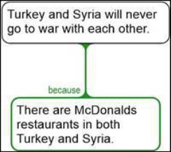
Figure 2.25
This little argument presents a rather surprising reason for thinking that Turkey and Syria will never go to war. The reason would obviously be worthless if there were not in fact, McDonald’s restaurants in both countries. But even if there are, more would be needed. What is the connection between having McDonald’s and going to war? The information offered as evidence must be somehow relevant to the claim made in the contention. In this case the relevance is not obvious at all.
Evaluating Strength
It follows that there are two major aspects to strength of a reason. Strength is a function of the level of confidence one has in the truth of the premises, and the degree of relevance those premises have to the contention. Or, in five words or less:
Strength = Truth + Relevance
Thus, we can break the process of evaluating a reason into three main steps:
Degrees of Strength
Reasons vary in their strength, from offering no support at all to conclusively proving the contention. In between, there is a potentially infinite number of shades of gray. It is possible to use numerical scales to specify strength; 0 to 1, 0 to 10, and 0 to 100 have all been used. However, for practical purposes a simple qualitative scale seems to be the most workable. In this approach a reason can be worthless, weak, strong, very strong, or conclusive.
See also: Topic Reason
You have $500, but you desperately need $1000; nothing less will do. You go to the casino. Question: should you bet all your money in one go? Or should you split your $500 into, say, ten lots of $50, and bet those one at a time?
If you are well-versed in the fundamental principles of probability, you will know the answer to this. To have the most chance of walking out with $1000, you should bet all your money in one go. The more gambles you make, the lower your overall probability of reaching your target.
Trouble is, most people are not masters of probability. They do not have expert knowledge of calculations to determine the answer to rely on; instead they fall back on their hunches, or ‘intuition.’ Now the interesting part is that most people’s intuitions here go the same way, which happens to be the wrong way. Most people say they would break the $500 into smaller amounts, and bet those one by one. They sense that this approach is ‘safer’ – which in one sense it is, because if you lose on the first bet, you still have some money to bet with, and hence a chance of reaching your goal. The trouble is that this kind of safety is not what matters most in this artificial situation.
People unwittingly sacrifice some likelihood of attaining what they really need to satisfy some basic emotional needs. This is an example of a cognitive bias:
Cognitive biases are universal, innate tendencies for humans tothink in certain ways, ways which often result in poor judgments.
All of us, in the first instance, do our thinking with the brains we have, which are the brains bequeathed to us by an evolutionary process stretching over millions of years. That process shaped our brains to help us survive in the particular contexts in which our ancestors found themselves. It gave us some extraordinarily subtle and powerful cognitive abilities, such as the ability to recognize in a flash that a slender, twisting shape in a tree is a snake, not a branch.
Evolution did not, however, build into our minds the abstract laws of logic and probability, or the ability to apply such laws to any situation whatsoever. And it did not build into our minds the particular capacities we would need to respond correctly to every situation we encounter in the modern world, a world different in so many ways from the environment in which we evolved.
Consequently, those innate, built-in, fast, and intuitive modes of thinking which work so well so often also, reliably, lead us astray in certain situations which can occur quite frequently in the environment we now inhabit. In casinos, for example. Casinos are institutions designed to ruthlessly exploit the mismatch between the minds nature gave us and the mathematical principles which in fact govern our financial well-being.
Research on Cognitive Bias
Cognitive biases have been studied quite closely for decades now; this study was given a major boost by the pioneering work of famous psychologists Daniel Kahneman and Amos Tversky. The research community has identified literally dozens of cognitive biases, affecting our thinking in many different domains, from judging probabilities to identifying causal relationships and explaining other people’s behavior.
There is, of course, considerable debate in most cases about the precise nature and extent of the supposed bias; you would expect nothing less from a vigorous research enterprise. Yet the general lessons are clear:
Our minds are riddled with biases, some quite subtle, others very strong, but all typically invisible unless we reflect on our thinking with special care.
These biases are universal (they affect everyone), and innate (they are with us from birth, and are ‘wired in’ to the structure of our brains.
In some cases, biases can be overcome with special training. In most cases, however, they are ineradicable features of our thinking. With training we can learn to circumvent or compensate for them, either as individuals or as communities. Indeed, the whole of science itself can be seen as a vast, sophisticated mechanism for achieving genuine know- ledge in the face of the limitations inherent in our cognitive equipment.
The advanced critical thinker is familiar with most or all cognitive biases; actively monitors her thinking to detect their influence; and practices and applies relevant techniques for ameliorating the sinister effects of these invisible and unwelcome mental tenants.
See also: http://en.wikipedia.org/wiki/List_of_cognitive_biases
Reasoning can go wrong in any number of different ways. Sometimes an argument goes wrong in a totally unique and original way. But life is not always that exciting. Often arguments go wrong in a familiar, standard or common way. In that case, we say that the argument commits a fallacy.
A fallacy is a common pattern of reasoning that is always or at least commonly bad.
(The qualification ‘at least commonly’ is there because sometimes an argument fitting the pattern is not in fact a bad argument; it just has the same form as others which (usually) are bad.)
Various Uses of the Word ‘Fallacy’
A fallacy is a kind or form of bad reasoning. However, the word ‘fallacy’ is also often used to describe a particular argument that happens to fit one of the standard fallacy forms. In such cases to say ‘that argument is a fallacy’ is shorthand for ‘that argument commits a fallacy’ or ‘that argument is an example of a fallacy’. People sometimes use the term as a colorful way of abusing an argument. In such cases, to say ‘that’s a fallacy!’ is just to say ‘that’s a bad argument.’ You should also be aware that the nature of fallacies is a subject of some dispute among logicians, and you might find somewhat different definitions of the term ‘fallacy’ if you look in other textbooks.
Names for Fallacies
Since fallacies are common patterns of (commonly) bad reasoning, and it is useful to be able to think and talk about bad reasoning, fallacies have been given names. Many of these names are quite arcane, usually because they are derived from Latin originals, e.g. petitio principii (begging the question) and argumentum ad hominem (personal attack).
An example of a fallacy: one common problem in reasoning is to use a key term one way in a reason, but another quite different way in the conclusion:
Lesbians are not normal, because they are only a small minority of the population, and a minority isn’t normal.
If the conclusion of this argument is to be interesting at all, then the word ‘normal’ must mean something like OK or not deviant. But in the reason, the term ‘normal’ really just means in the majority. The argument tries to get you to accept a controversial conclusion on the basis of an uncontroversial premise, craftily changing the meaning of a crucial term along the way.
Since this kind of problem occurs quite often, it has been given a name. It is called the fallacy of equivocation.
What are the Fallacies?
Dozens of fallacies have been identified and named. Good critical thinkers are familiar with most of the fallacies, and carry that knowledge in their heads, ready to apply it whenever they engage in reasoning. For people who have not yet memorized all the fallacies, there are some very good lists on the internet. One of the best is The Fallacy Files – http://www.fallacyfiles.org/.
Why Learn About Fallacies?
Knowledge of the fallacies is helpful in evaluating arguments. Instead of evaluating every argument laboriously ‘from scratch,’ you can often instantly recognize that an argument is committing a fallacy of a particular kind. Knowledge of fallacies will also help you avoid mistakes in your own reasoning. Finally, (we didn’t say this, but…) you can sometimes use fallacies to your rhetorical advantage. Many fallacies are common precisely because they are seductive, i.e., many people naïve in the art of argument will fall for them time and again. That is why politicians, for example, ‘commit’ so many fallacies.
Concepts from Critical Thinking with Rationale
A
Abductive Reasoning
Inferring that some hypothesis is true because it would causally explain some body of evidence.
Abstraction
Abstraction is the process of identifying and structuring concepts and their particulars. In a hierarchical structure, the higher levels represent more general or abstract concepts, while the lower levels are concrete examples of the concept.
Argument
An argument is a structured set of reasons or objections bearing upon some claim.
Argument Map
An argument map is the graphical display of the structure of reasoning.
Argument Pattern
An argument pattern is a common, distinctive structure of reasoning. Examples of argument patterns are simple deductions like the modus tollens (If P is true, than Q is true; Q is not true. Therefore P is not true), and inductions.
Argument Web
An argument which is both multi-reason and multi-layer.
Assumption
An assumption is a proposition which somebody takes to be true without having provided or considered evidence in relation to it. Basic premises (at least, those with no basis) are classic cases of assumptions.
B
Basis
A basis is a kind of rational support which is not itself a reason (though a basis can generally be converted into, or articulated as, a reason). E.g.: assertions, expert opinions, personal experiences and common beliefs are all different kinds of bases for accepting a claim with- out an argument. A basis can be solid or shaky, as compared with a reason which can be strong or weak.
Basic Premise
A basic premise is one where the arguments ‘bottom out,’ i.e., one that has no further reasons or objections bearing upon it. Basic premises (at least, those with no basis) are classic cases of assumptions.
C
Case
A case is a set of reasons or objections within a complex argument, grouped together because they play a similar role (such as to support or oppose a position).
Chain of Reasoning
A multi-layer argument. Usually the term is applied to arguments with more than two layers.
Claim
A proposition put forward by somebody as true. In a reasoning map, a claim may be the contention, a reason, an objection or a rebuttal. In an analytic map, a claim may be the main contention or a premise in a reason or objection.
Cognitive Bias
A cognitive bias is a universal, innate tendency for humans to think in certain ways, ways which often result in poor judgments.
Coherent Group
A coherent or properly thought-out and presented group should be complete (no gaps), internally distinct (no overlaps), minimal (no outsiders) and ordered.
Complex Argument
An argument where there is more than one reason or objection bearing upon a claim.
Conclusion
A claim for which some evidence is presented, whether for or against. A conclusion is what follows from an argument. The term is used in a number of ways, but we like to think of it primarily as the evaluated contention; i.e., your conclusion is your final judgment about whether you accept or reject an argument’s main contention.
Congruence
A hierarchy is fully congruent when similar grouping principles are used throughout the hierarchy. Congruence has two aspects: horizontal and vertical congruence.
Consideration
Just a reason or an objection.
Contention
A claim for which some evidence is presented, whether for or against. Logicians often use the word ‘conclusion’ to refer to a contention.
Co-premise
A co-premise is any premise in a reason or objection other than the main premise (the central and first claim).
Counter-argument
A counter-argument to a reason is an objection to that reason’s contention, and vice versa.
Critical Thinking
Critical thinking, in a nutshell, is the art of being right. Critical thinking is applying those general principles and procedures of thinking which are most conducive to truth or accuracy in judgment.
D
Debate
A dispute in which the first-level reasons and objections are themselves disputed.
Declarative Sentence
A declarative sentence is one which states an idea that can be true or false.
Deductive Argument
One which purports to be valid by virtue of its logical form. A deductive argument is one whose validity (if it is valid) is guaranteed by the formal structure of the argument.
Dispute
An argument in which there are both reasons and objections bearing upon a single contention.
E
Evaluating Claims
To evaluate a claim is to determine how confident you are that it is true (or false).
Enthymeme
A reason with a hidden premise that can be added.
Epistemology
Epistemology is the philosophical study of the nature of knowledge.
Evaluating Reasons
To evaluate a reason is to decide how strongly the reason supports the contention.
Evidence
Evidence is anything presented in support of a claim (contention, reason or objection).
F
Fallacy
A fallacy is a common pattern of reasoning that is usually, or at least often, poor reasoning. Many fallacies have been identified and given names.
G
Golden Rule
The Golden Rule: every simple argument has at least two premises.
Group
A group is a collection of items that belong together in some way.
Group of Considerations
All reasons and objections bearing directly upon the main contention or any other reason or objection.
Grouping
The process of forming or specifying groups. It involves identifying a suitable grouping principle (see below), identifying the items that belong to the group thus defined, and presenting the items in a clear and orderly way.
Grouping Principle
A grouping principle is an explicit statement of the essence of the group, i.e., the sense or respect in which the items belong together.
H
Hidden Premise
A co-premise that is not actually stated when an argument is presented. A hidden premise is part of a reason that is not explicitly stated when an argument is presented, such as an assumption.
Hierarchy
A hierarchy is a nested structure of groups and subgroups, with all the children of an item constituting one group.
Hierarchical Grouping
Hierarchical grouping is organizing items and groups into hierarchical structures.
Holding Hands Principle
Every significant word, phrase or concept appearing in a premise of a simple argument but not in the contention must also appear in some other premise of that simple argument.
I
Identifying Arguments
To identify an argument in prose is to locate an argument within a body of prose, and to specify clearly what it is.
Identifying Contentions
Identifying a contention is interpreting an argumentative text to identify which of the author’s claims is functioning as a contention, i.e., being argued for (or against).
Indicator
An [argument structure] indicator is a word or phrase whose role in an argumentative text is to help the audience identify the structure of the reasoning.
Inductive Argument
An inductive argument is one that purports to extend our knowledge, i.e., to draw a conclusion which goes beyond the information contained in the premises. Typical inductive arguments involve some kind of generalization. An inductive argument is an argument in which there is some kind of extension or generalization from a situation (a ‘source’) to some wider or related situation (a ‘target’).
Inference Objection
An objection to another simple argument, providing evidence not against any stated premise but against the relationship between the stated premises and their contention. An inference objection is an objection to an assumed or hidden claim that is not explicitly stated in a reason (e.g. a hidden premise).
Inference Rebuttal
An objection to another objection that provides evidence against the inference from the stated premises of that other objection to the falsity of its contention.
Item
An item is a broad term to represent anything you choose to put in a grouping box. For instance, these can be objects, ideas, categories, beliefs, plans... whatever you need to group or categorize.
K
Knowledge
Knowledge is justified true belief. That is, you genuinely know something when you believe it, you are justified in believing it, and it is actually true.
L
Lemma
A lemma is a non-basic premise, i.e., a claim that is a contention in one argument and a premise in another.
M
Main Contention
The main contention of a multi-layer argument is a contention that is not itself part of any reason or objection; it is at the top (or trunk) of the argument tree.
Main Premise
A main premise is the most important claim in a reason or objection.
Main Reason
Reasons are all claims that seek to show the truth of another claim. A main or primary reason is at the top level, and seeks to provide evidence that the position or main point is true.
MECE
Considerations in a group should be mutually exclusive (no overlaps) and collectively exhaustive (no gaps). MECE is an acronym for ‘mutually exclusive, collectively exhaustive’ – or ‘no overlaps, no gaps’. MECE is a fundamental quality of properly formed groups.
Mutually exclusive (ME). Within a group, considerations should be genuinely distinct from each other. ME is the first aspect of the MECE rule.
Collectively Exhaustive (CE). Within a group, considerations should cover all relevant, serious arguments; they should leave no gaps. CE is the second aspect of the MECE rule.
Multi-layer Argument
An argument in which there are reasons or objections bearing upon reasons or objections.
Multi-reason Argument
An argument with more than one reason or objection for a single contention.
N
No Danglers Rule
Every significant word, phrase or concept appearing in one claim (contention or premise)
of a simple argument must also appear in another claim.
O
Objection
A piece of evidence against some claim. Technically, an objection is a set of claims working together to provide evidence that another claim is false.
Occam’s Razor
One should not increase, beyond what is necessary, the number of entities required to explain anything.
Opposing Case
The opposing case consists of all reasons and objections whose role in the argument is to provide evidence in opposition to the position.
P
Position
A position is the main point being advocated or considered. It can also be called the contention, the conclusion or the issue, depending upon your context.
Premise
A claim that is part of a reason or an objection.
Premise Objection
An objection to a stated premise of another simple argument.
Premise Rebuttal
An objection to an objection that provides evidence that one of the stated premises of that objection is false.
Proposition
An idea that is either true or false.
Pyramid Rule
More general or abstract considerations should appear higher in the argument tree, and considerations at the same level of the tree should be at roughly the same level of generality or abstraction.
R
Rabbit Principle
Every significant word, phrase or concept appearing in the contention of a simple argument must also appear in one of the premises.
Reason
A piece of evidence in support of some claim. Technically, a reason is a set of claims working together to provide evidence that another claim is true.
Rebuttal
A rebuttal is an objection to an objection. A rebuttal provides evidence that an objection is not a good objection, i.e., not good evidence against its contention.
Refining Claims
To refine a claim is to reformulate it until the claim is as clear and definite as required for argument analysis and evaluation. As far as is reasonably possible, ensure that the claim is
Declarative – expressed in a declarative sentence
Simple – made up of only one claim
Literal – not metaphorical
Precise – such that only a narrow range of situations would make it true
Concise – containing no superfluous words or phrases
Unambiguous – containing no problematic ambiguities
Emotionally measured – expressed with an appropriate degree of emotional overlay.
Rejoinder
An objection to a reason. A rejoinder provides evidence that a reason is not a good reason, i.e., not good evidence for its contention.
S
Scenario Testing
Scenario Testing is a general method for determining the strength of a reason:
The reason is stronger when there are few scenario’s and when they are less plausible.
Simple Argument
A contention with a single piece of reason for it, or a contention with a single objection to it.
Stranded Co-premises
Two premises are stranded from each other when they in fact belong together as part of one reason but are diagrammed as belonging to separate reasons.
Strange Bedfellows
Two premises are strange bedfellows if they are diagrammed as co-premises in one reason when in fact they belong to completely different reasons.
Supporting Case
The supporting case consists of all reasons and objections whose role in the argument is to provide evidence in support of the position.
Syllogism
A syllogism is an argument made up of a single reason with two premises, bearing upon a contention.
V
Valid
A valid argument is one in which the premises guarantee the truth of the conclusion, i.e., if the premises are true, the conclusion must be true.
Maps of the concepts ‘Claim’ and ‘Argument’
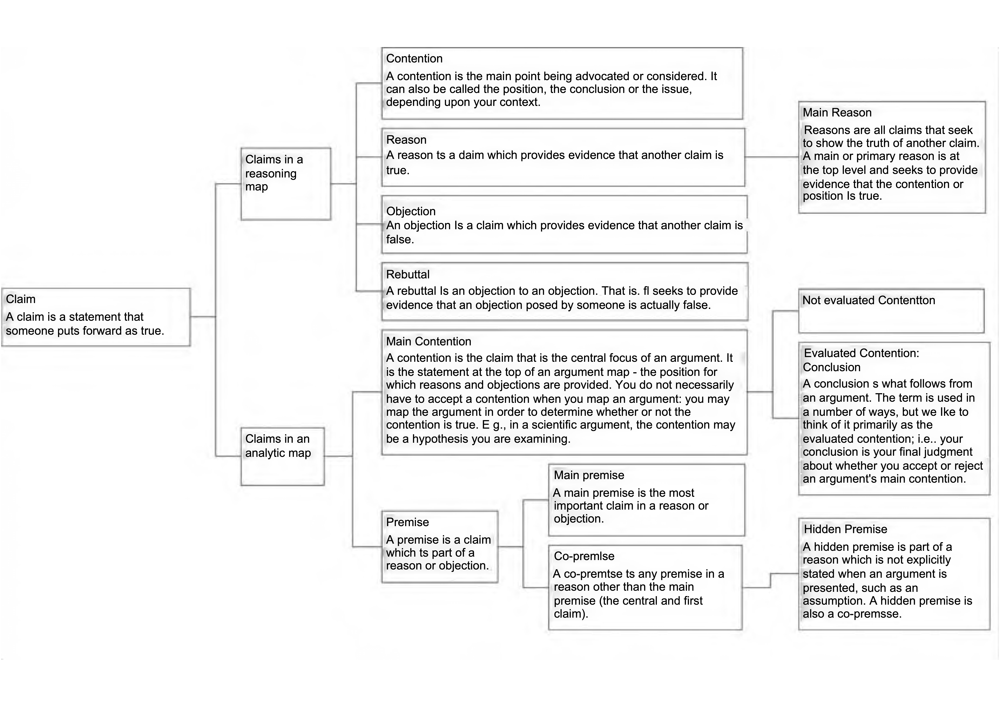
Figure 3.1
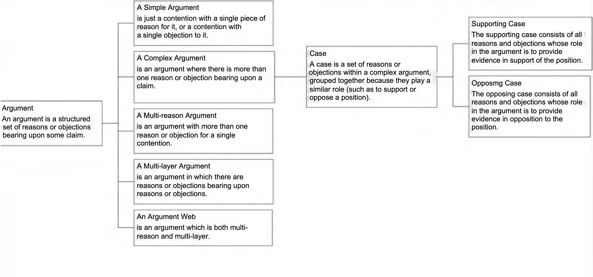
Figure 3.2
The method Critical Thinking with Rationale method is primarily aimed at students attending critical thinking training courses in an educational context. However, it is also possible to develop your critical thinking skills separately from an educational context. There are restrictions, though: in the case of self-study you will not benefit from feedback, explanation by the teacher and the collective analysis of interpretations; your blind spots will not be pointed out to you either. Naturally, you will have to do without the exercises, lessons and tests provided by the method.
Given these restrictions this self-study guide provides you with a concise guide to enable you to train several essential critical thinking skills for yourself. After an overview and details of those thinking skills a brief explanation will be given of Rationale itself and the accompanying exercise programs. At the end of this guide you will find two approaches to help you deal with this self-study.
4.1 Details of Critical Thinking Skills
What are the critical thinking skills that are trained in the Critical Thinking with Rationale method? They are mentioned in the map below; they are first defined and then worked out in more detail in sub-skills.
Rationale is the instrument that you can use to train these critical thinking skills and for
that purpose it provides three exercise programs with an increasing degree of difficulty. The following section will point the way through the program and the exercises, the so called Tutorials.
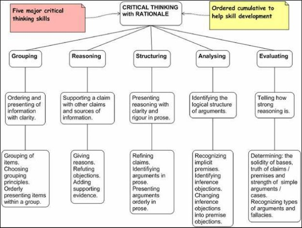
Figure 4.1 Skills developed by Critical Thinking with Rationale
4.2 Working with Rationale
To get a first impression of how it is to work with Rationale you can view some videos at www.ReasoningLab.com.
The Rationale screen below the ribbon task bar at the top is built up of three elements: in the center you will find the infinitely expandable Workspace, to its left there is the Building Panel and to its right the Text Panel.
The Workspace is used to order information visually and to construct arguments. The Building Panel has tab sheets that can be scrolled and enable you to make, for example, grouping and reasoning diagrams. The Text Panel also has tab sheets, the first of which is Explore. Below that you will find the tutorials under the heading of Exercising.
The Tutorials Critical Thinking (Tut.CT) are designed to train yourself at a simple level in all the critical thinking skills mentioned above with the help of Rationale.
The Tutorials Argument Mapping (Tut.AM) offer six lessons with exercises for advanced students and go into more detail with respect to making and analyzing arguments.
The Tutorials Reasoning for Knowledge (Tut.RK) are the area of knowledge and science studies/epistemology. Here ten topics, including fallacies, knowledge, truth and (pseudo) science will be dealt with.
For questions and further information about working with Rationale the program provides an extensive help function that you can find in the Rationale Guide under Explore.
4.3 Training Critical Thinking Skills
All three tutorials consist of explanations, assignments and model answers. Critical thinking requires effort, much training and independent thinking; resist the temptation to quickly click on the model answer and, when doing the exercises, first try to formulate your own answer.
The assignments are accompanied by general examples that can be understood by everyone. Do not concern yourself with the content of the examples and the claims presented in them, but focus on the proper ordering of information, understanding the principles and applying the rules with respect to the relationships between claims.
You can approach your training in critical thinking skills from two angles: you can go through the three tutorials in Rationale step-by-step, or you can train yourself in each critical skill one by one. If you opt for the former approach, it is good to know that a great many concepts that are used in these tutorials can be found in this book. They are worked out and explained in Chapter 2, Topics Critical Thinking with Rationale and again briefly in Chapter 3, Definitions. You will get familiar with these concepts by consulting this book regularly.
If you want to train yourself in the critical thinking skills one by one, consult the schedule below that concludes this chapter. There you can find exercises from the various tutorials for each critical thinking skill that you can make in Rationale. You will also be told where you can find the supporting theory, both in this book (referred to as Book CT) and in Rationale, complemented by two links that take you to applications of Rationale.
|
|
Exercises |
Background Material |
|
Grouping |
Tut. CT: Rationale>Explore>Exercising: Tutorials>Critical Thinking>Set 1 Tut. AM: Rationale>Explore>Exercising: Tutorials>Argument Mapping>no 6 (you better do this tutorial after you have worked through the skills of reasoning and analyzing. This is because no 6 is about the grouping of arguments within a complex argument). |
Book CT: 1,2.1 Rationale>Explore>Working with Rationale > Rationale Guide>Grouping Rationale>Explore> Working with Rationale>Help>Grouping |
|
Reasoning |
Tut. CT: Rationale>Explore>Exercising: Tutorials>Critical Thinking>Set 2,7 Tut. AM: Rationale>Explore> Exercising: Tutorials>Argument Mapping> ‘Before you start’. Tut. RK: Rationale>Explore>Exercising: Tutorials>Reasoning for Knowledge>Reasoning |
Book CT: 2.2 Rationale>Explore>Working with Rationale>Rationale Guide>Reasoning Rationale>Explore>Working with Rationale>Rationale Guide>Basis Boxes |
|
Structuring |
Tut. CT: Rationale>Explore>Exercising: Tutorials>Critical Thinking> Set 3, 4, 5, 6 and 12 (the last one once you have practiced all the other skills). Tut. AM: Rationale> Explore>Exercising: Tutorials>Argument Mapping> no 1 |
Book CT: 2.3 Rationale>Explore>Working with Rationale>Rationale Guide>Essay Planning ‘Essay Writing with Rationale’* Scientific Writing Course ** |
|
Analyzing |
Tut. CT: Rationale>Explore>Exercising: Tutorials>Critical Thinking> Set 10 Tut. AM: Rationale>Explore>Exercising: Tutorials> Argument Mapping> no 2 - 6 Tut. RK: Rationale>Explore>Exercising: Tutorials>Reasoning for Knowledge> all parts except for Fallacies |
Book CT: 2.4 Rationale>Explore>Working with Rationale>Rationale Guide>Advanced Reasoning |
|
Evaluating |
Tut. CT: Rationale>Explore>Exercising: Tutorials>Critical Thinking>Set 8, 9, 11 Tut. RK: Rationale>Explore>Exercising: Tutorials>Reasoning for Knowledge>Fallacies |
Book CT: 2.5, 3 Rationale>Explore>Working with Rationale>Rationale Guide>Evaluating |
* http://www.youtube.com/watch?v=PDPahgPEg1Y
** http://communication.ncbs.res.in/ScienceWriting2/
5 References and Background Information
Accompanying site with this book
For examples of the use of Rationale (e.g. samples of argument maps), educational materials, tutorials in Critical Thinking, Argument Mapping and Reasoning for Knowledge and research behind the method Critical Thinking with Rationale, see:
www.ReasoningLab.com and www.RationaleOnline.com .
Critical Thinking
Critical Thinking On The Web: http://www.ReasoningLab.com/critical
Critical Thinking Web: http://philosophy.hku.hk/think
This educational web site provides over 100 free online tutorials on critical thinking, logic, scientific reasoning, creativity, and other aspects of thinking skills.
On Critical Thinking: research
Abrami PC, Bernard RM, Borokhovski E, Wadem A, Surkes M A, Tamim R, Zhang D. 2008. Instructional interventions affecting critical thinking skills and dispositions: a stage 1 meta-analysis.
Review of Educational Research. 78:1102-1134.
The most recent and extended meta-analysis until now. It '...summarizes the available empirical evidence on the impact of instruction on the development and enhancement of critical thinking skills and dispositions.' .
Conclusions:
1. Training in critical thinking works.
2. In regard to the question of how to plan a curriculum in such a way that students are successfully developing their critical thinking skills:
' This is an important finding for the design of courses. Developing CT skills separately and then applying them to course content explicitly works best.'
' When instructors received special advanced training in preparation for teaching CT skills...the impacts of the interventions were greatest.'
' As important as the development of CT skills is, educators must take steps to make CT objectives explicit in courses and to integrate them into both pre-service and in-service training and faculty development.'
( Abrami, p. 1121-1122).
Davies, W.M., In Defence of Generalisation: Moore on the Critical Thinking Debate (2004).
See also here .
Higgins S, Hall E, Baumfield V, Moseley D (2005) A meta-analysis of the impact of the implementation of thinking skills approaches on pupils.
In: Research Evidence in Education Library. London: EPPI-Centre, Social Science Research Unit, Institute of Education, University of London.
'Overall, the quantitative synthesis indicates that, when thinking skills programmes and approaches are used in schools, they are effective in improving pupils’ performance on a range of tested outcomes (relative to those who did not receive thinking skills interventions). The magnitude of the gains found appears to be important when compared with the reported effect sizes of other educational interventions.
This review found an overall mean effect of 0.62 for the main (cognitive) effect of each of the included studies, larger than the mean of Hattie’s vast database of meta-analyses at 0.4 (Hattie, 1999) but very similar to the overall figure reported by Marzano (1998, p 76) of 0.65 for interventions across the knowledge, cognitive, metacognitive and self-system domains. In particular, our study identified metacognitive interventions as having relatively greater impact, similar to Marzano’s study.'
Marin, L.M., Halpern, D.F., Pedagogy for developing critical thinking in adolescents: Explicit instruction produces greatest gains .
Thinking Skills and Creativity, September 2010.
On Critical Thinking & Argument Mapping
Alvarez, C., Does Philosophy improve Critical Thinking Skills? 2007. A meta-analysis of research on the effectivity of different methods to develop critical thinking skills. Click here for a map of the conclusions. For the meta-analysis itself click here ( see especially Chapter 5).
Davies, W.M., 'Not quite right' : helping students to make better arguments.
Teaching in Higher Education. Vol.13, No. 3, June 2008, 327-340. (On the same topic, see the FAQ in Argunet: http://www.argunet.org/help/#undefined
Davies, W.M., Concept Mapping, Mind Mapping and Argument Mapping: What are the differences and do they matter? , 2007.
Dwyer, C., Hogan, M., & Stewart, I. (2012): An evaluation of argument mapping as a method of enhancing critical thinking performance in e-learning environments. Metacognition and Learning, 7(3), 219-244.
doi: 10.1007/s11409-012-9092-1
Dwyer, C., Hogan, M., & Stewart, I. (2013): An examination of the effects of argument mapping on students ' memory and comprehension performance.
Thinking Skills and Creativity, 8(0), 11-24. doi: http://dx.doi.org/10.1016/j.tsc.2012.12.002
Elsegood, S.,Teaching Critical Thinking in an English for Academic Purposes Program using a 'Claims and Supports' Approach.
Refereed paper presented at the 10th Pacific Rim First Year in Higher Education Conference, 2007.
Gelder, T. van, Teaching Critical Thinking: Some Lessons from Cognitive Science, 2005.
For a map of the conclusions/lessons of the article see here .
Gelder, T. van, What is Argument Mapping?
Gelder, T. van, Bissett, M., Cumming, G., Cultivating Expertise in Informal Reasoning.
Canadian Journal of Experimental Psychology, 2004, 58:2. Research on the importance of 'dedicated practice' for the development of critical thinking skills.
Mara Harrell (Carnegie Mellon University) is doing research into the influence of argument mapping on the development of critical thinking skills in her own practice as a lecturer philosophy at Carnegie Mellon. See her list of publications here.
Rider, Yanna; Thomason, Neil (2008): Cognitive and Pedagogical Benefits of Argument Mapping: L.A.M.P. Guides The Way to Better Thinking .
Knowledge Cartography, Advanced Information and Knowledge Processing. Springer-Verlag London.
The Monash Critical Thinking Study, 2004-2007.
'Many people reason poorly, by almost any measure of reasoning. Although there is evidence that people can be taught to think critically, educators don't really know how. They don't know what works, what doesn't, or why. This report describes the Monash Critical Thinking Study - a three year project to investigate the effectiveness of a number of teaching methods for improving critical thinking.'
On the method Critical Thinking with Rationale and Rationale itself
.The open courseImproving Reasoning is made with Rationale. It has textbooks, tons of exercises and Mastery Learning Quizzes.
This course is part of an IARPA funded research project. See for more information: Ter Berg, T., Van der Brugge, E., Teaching Critical Thinking with Rationale. INTED 2013.
Davies, W.M., Computer-Assisted Argument Mapping: A Rationale Approach, 2009. Higher Education.
S. van Driel & H. Prakken, Visualising the argumentation structure of an expert witness report with Rationale (extended abstract) .
In A.Z. Wyner (ed.), Proceedings of the Workshop on Modelling Legal Cases and Legal Rules, in conjunction with JURIX-10, Liverpool 2010, pp. 1-8.
From the Abstract:
'This paper reports on a case study in which the use of the Rationale software was investigated to analyse the argumentation structure of a Dutch expert witness report in a criminal case. The underlying motivation of the case study was to explore the usefulness of argumentation visualisation software for increasing a judge's understanding of expert reports and for assisting him or her in asking the proper critical questions to the expert. By way of an initial exploration of this usefulness, an expert report was analysed with the Rationale software. The visualisation was informally discussed with a legal expert, who was generally positive but also expressed some concerns and expected that the main usefulness of the tool is in training and education of judges.'
.For the Rationale maps that were used in this research, click here (you need Rationale to open them).
.Twardy, C., Argument Maps Improve Critical Thinking, 2004.
.Teaching Philosophy, 27:2.
.Argument Mapping in Your Subject:
'This website provides resources intended to support university-level educators incorporate argument mapping into their teaching, with a particular focus on how argument mapping can be incorporated into a standard one-semester subject in almost any discipline.'
.The Rationale WIKI on www.reasoninglab.com/rationale-wiki/. On this site you can find many argument maps (made in Rationale ) on different subjects. Especially noteworthy are the sections on patterns of argument and the section on argumentation schemes and their related critical questions (cf. the work of Walton, Pollock and Katzay & Reed).
.An example of an argument map made a s the first step in writing an essay or paper. Note the ease and precision with which a teacher can provide the student with feedback before he starts with time consuming wrestling with often badly structured text.
.Examples of and Guides for lecturers for the use of Rationale in education:
in secondary and tertiairy education
On critical thinking and writing an essay with the help of Rationale
A short video shows how you can make a well structured paper by using Rationale.
6 steps to better thinking: Rationale’s interface has been designed to provide a path for critical thinking. From gathering research, to weighing up evidence to formulating a judgement, Rationale will assist you. Here you will find 6 critical thinking steps with examples to demonstrate the path to better outcomes.
Geoff Hyde (National Centre for Biological Sciences, Bangalore) develops an online course Scientific Writing in which Rationale is fully integrated.
From the Introduction:
'Rationale is mainly focussed on teaching people how to think clearly about contentious issues, and has very successfully popularized a diagrammatic method of argument development.
My experiences in the classroom have taught me that this diagrammatic approach is also a great starting point for writing all types of scientific text. It is the most practical way to outline that I have come across. Outlining is often promoted as a writing tool because it forces the writer to focus first on organising ideas, before moving onto packaging them.'
{kind=link}